量化交易（Quantitative Trading）是利用数学模型、统计学方法和计算机程序来进行金融交易的一种方式。
量化交易用系统性的、基于数据的方法来识别和执行交易机会，取代凭感觉、凭消息的主观决策，目标是让投资决策更高效、更可复制。
本教程将带你用 Python 从零开始，走完获取数据、分析数据、编写策略、回测验证的完整量化流程。
阅读本教程，您需要有以下基础：
量化交易的出发点很简单：把一套交易思路写成明确的规则，让计算机来验证和执行。
比如"短期均线上穿长期均线就买入，下穿就卖出"，这就是一条可以被程序精确执行的规则。
围绕这样的规则，量化交易者要做四件事：获取市场数据、把想法变成策略、用历史数据回测验证、最后控制好风险。
需要澄清一个常见误解：量化交易不等于高频交易。
高频交易只是量化交易中持仓时间极短、交易频率极高的一类，大部分量化策略的持仓周期是数天甚至数月。
按频率划分，量化交易大致可以分为以下几类：
| 类型 | 持仓周期 | 典型策略 |
|---|---|---|
| 高频交易（HFT） | 毫秒到分钟 | 做市、套利，依赖机房 colocated 服务器与高速链路 |
| 中频交易 | 数天到数周 | 多因子选股、行业轮动 |
| 低频交易 | 数周到数月 | 趋势跟踪、基本面量化 |
本教程介绍的策略以后两者为主，它们对硬件没有要求，一台普通电脑就能完成学习和实践。
传统的主观交易依赖人的经验和判断，量化交易则把决策权交给事先写好的模型。
两者的核心差异体现在以下几个维度：
| 对比维度 | 主观交易 | 量化交易 |
|---|---|---|
| 决策依据 | 经验、直觉、消息面 | 数据与数学模型 |
| 执行方式 | 人工盯盘、手动下单 | 程序自动生成并执行信号 |
| 情绪影响 | 容易追涨杀跌、拿不住单 | 严格按规则执行，不受情绪波动影响 |
| 覆盖范围 | 人工只能跟踪少数标的 | 可同时扫描全市场几千只股票 |
| 风险控制 | 依赖个人纪律 | 止损、仓位直接写进代码 |
| 可验证性 | 难以复盘归因 | 可回测、可统计、可迭代 |
量化并不是要取代人，而是把人从重复的盯盘劳动中解放出来，让精力集中在策略研究本身。
一门成熟的量化交易体系，通常具备下面几个特征：
| 特点 | 说明 |
|---|---|
| 模型驱动 | 使用统计学模型分析价格模式、趋势和波动性，而不是凭感觉判断 |
| 数据支撑 | 策略的构建和验证依赖大量历史与实时数据，包括价格、成交量、市场深度等 |
| 自动化执行 | 由计算机程序自动执行交易，策略可以实时适应市场条件，不依赖人工干预 |
| 纪律化风控 | 通过控制仓位大小、设置止损等手段，在策略层面就限制单次亏损 |
| 统计套利 | 利用价格或金融指标之间的统计关系寻找交易机会，例如配对交易 |
| 机器学习应用 | 部分策略使用机器学习算法识别模式、预测走势和优化交易决策 |
注意：量化交易的目标是通过系统性的方法提高交易效率和准确性，但模型在历史数据上有效不代表未来一定有效。任何量化策略都有失效的可能。
本教程学习路线如下图所示：
量化交易是一套严谨的研究方法，但它不是稳赚不赔的代名词。
历史回测表现优秀的产品，未来可能因为市场环境变化而失效，历史上因模型失效导致巨额亏损的机构案例并不少见。
本教程所有内容仅用于技术学习，不构成任何投资建议。
据此操作，风险自担。
在开始量化之前，先解决一个所有 Python 项目都绕不开的问题：环境隔离。
本篇介绍两个轻量工具——Python 内置的 venv 和新一代极速工具 uv，并用它们为量化课程准备好环境。
想象一个常见场景：你半年前写的一个策略脚本依赖 pandas 1.x，今天新学的教程要求 pandas 2.x，而它们无法共存于同一个系统环境。
直接在系统 Python 里反复装卸不同版本的包，最终往往把环境搅成一团乱麻，俗称"依赖地狱"。
虚拟环境的思路很简单：给每个项目一个独立的包安装目录，互不干扰。
量化项目尤其需要它——回测、机器学习、数据抓取可能各自依赖不同版本的库，一个独立的 quant 环境能保证后续教程的代码始终按预期运行。
Python 生态里常用的环境方案有三个，定位各不相同：
| 工具 | 定位 | 适合谁 |
|---|---|---|
| venv | Python 内置，最基础的虚拟环境方案 | 所有 Python 用户，零安装成本 |
| uv | 新一代工具，环境 + 依赖 + Python 版本一体化管理，速度极快 | 追求效率的开发者，本篇推荐 |
| Anaconda（conda） | 数据科学全家桶发行版，预装科学计算库并自带 conda 环境 | 数据科学初学者，见Anaconda 教程 |
三者解决的是同一类问题，实际使用中选其一即可。
本篇先讲内置的 venv 建立概念，再讲效率更高的 uv，下一篇介绍 Anaconda。
venv 是 Python 官方自带的虚拟环境模块，Python 3.3 及以上版本无需安装任何东西就能使用。
在项目目录下执行：
命令执行后没有任何输出，就表示创建成功。
当前目录会多出一个 quant-env 文件夹，里面是一套独立的 Python 解释器和包目录，之后这个环境里安装的所有包都存放在这里。
创建好的环境需要"激活"后使用，不同平台的命令不同：
| 平台 | 激活命令 |
|---|---|
| macOS / Linux（bash、zsh） | source quant-env/bin/activate |
| Windows（PowerShell） | .\quant-env\Scripts\Activate.ps1 |
| Windows（CMD） | quant-env\Scripts\activate.bat |
激活成功后，命令行提示符前面会出现环境名称：
(quant-env) $ which python /private/tmp/qt_venv_demo/quant-env/bin/python (quant-env) $ python -V Python 3.9.6
注意 which python 的输出：激活后 python 命令指向虚拟环境内部的解释器，此时 pip 安装的所有包都只进入这个环境。
退出环境只需一条命令：
(quant-env) $ deactivate
退出后命令行提示符恢复原样，python 命令也回到系统环境。
易错点：虚拟环境与目录绑定而非与终端绑定，换了终端窗口要先重新激活；删除环境则直接删除 quant-env 文件夹即可，不会影响系统 Python。
激活环境后，用 pip 安装包，建议同时指定国内镜像加速下载：
输出结果如下所示：
Collecting six Using cached six-1.17.0-py2.py3-none-any.whl.metadata (1.7 kB) Using cached six-1.17.0-py2.py3-none-any.whl (11 kB) Installing collected packages: six Successfully installed six-1.17.0
把当前环境的依赖清单导出到 requirements.txt，是分享和复现环境的标准做法：
输出结果如下所示：
six==1.17.0
别人拿到这份清单后，创建一个新环境并用一条命令即可装齐全部依赖：
pip install -r requirements.txt
venv 解决了"隔离"问题，但有两个日常痛点：
一是慢：每个新环境安装依赖都要从网络重新下载，多项目并行时等待时间可观。
二是裸：没有依赖锁文件（requirements.txt 里不含依赖的依赖），没有 Python 版本管理，团队协作时环境复现经常出现偏差。
这些痛点正是下面 uv 的用武之地。
uv 是 Astral 公司（知名工具 Ruff 的开发方）用 Rust 编写的 Python 环境与包管理工具。
它兼容 pip 的使用习惯，同时把虚拟环境、依赖管理、Python 版本管理整合到一个工具里，速度远超传统方案。
macOS / Linux 用官方脚本安装：
curl -LsSf https://astral.sh/uv/install.sh | sh
Windows PowerShell 用对应脚本：
powershell -ExecutionPolicy ByPass -c "irm https://astral.sh/uv/install.ps1 | iex"
如果装有 Homebrew，也可以直接：
brew install uv
安装完成后验证版本：
$ uv --version uv 0.10.0 (0ba432459 2026-02-05)
uv 创建虚拟环境的命令是 uv venv：
输出结果如下所示：
Using CPython 3.12.11 Creating virtual environment at: quant-uv-env Activate with: source quant-uv-env/bin/activate
注意第一行：venv 只能使用当前系统的 Python 版本，而 uv 会自动选择（必要时自动下载）合适的 Python 版本，相当于自带了 Python 版本管理。
激活方式与 venv 相同，激活后用 uv pip 安装包，命令习惯与 pip 一致：
输出结果如下所示：
Resolved 1 package in 6ms Prepared 1 package in 442ms Installed 1 package in 4ms + six==1.17.0
查看已安装的包：
$ uv pip list Using Python 3.12.11 environment at: /tmp/qt_venv_demo/quant-uv-env Package Version ------- ------- six 1.17.0
uv 的速度优势需要分情况看，下面是一次本机实测（macOS，清华镜像，安装 pandas）：
| 场景 | 耗时 | 说明 |
|---|---|---|
| pip 首次安装 | 17.1 秒 | 时间主要花在从网络下载 |
| uv 首次安装 | 13.7 秒 | 同样受网络下载限制，优势不大 |
| uv 再次安装（缓存命中） | 0.1 秒 | uv 有全局缓存，装过的包不再走网络 |
结论很清晰：受网络下载限制时，两者差距有限；而 uv 的本质优势在于全局缓存——新建环境、重装依赖时几乎瞬时完成。
项目越多、环境越多，这项优势越明显。
说明：表中为一次实测数据，绝对值随网络状况浮动，但量级关系是稳定的。尤其多环境批量装依赖的场景，uv 的缓存优势会进一步放大。
除了充当"更快的 pip"，uv 还提供基于 pyproject.toml 的现代项目管理工作流：
uv init 会在当前目录生成标准的项目结构：
.git .gitignore .python-version main.py pyproject.toml README.md
其中 pyproject.toml 是项目的依赖声明文件，初始内容如下：
执行 uv add six 后，dependencies 会自动写入 "six>=1.17.0"，同时生成锁文件 uv.lock，精确记录每个依赖的版本。
uv add 与 uv run 的输出如下所示：
$ uv add six
Resolved 2 packages in 5ms
Prepared 1 package in 10.75s
Installed 1 package in 3ms
+ six==1.17.0
$ uv run python -c "import six; print('six 版本:', six.__version__)"
six 版本: 1.17.0
有了 pyproject.toml 和 uv.lock，团队成员拿到代码后一条 uv sync 就能还原出完全一致的环境，这是 venv + requirements.txt 做不到的。
提示：本教程只需要 uv venv 加 uv pip 这一组兼容命令即可跟上进度；项目管理模式供有兴趣的读者进阶。
| 对比项 | venv | uv |
|---|---|---|
| 是否需要安装 | Python 自带，零安装 | 需单独安装（一条命令） |
| 环境创建与安装速度 | 常规 | 极快，缓存命中后近乎瞬时 |
| Python 版本管理 | 只能用当前系统版本 | 自动选择并安装所需版本 |
| 依赖锁定 | 无（requirements.txt 不完整） | uv.lock 精确锁定 |
| 学习成本 | 最低 | 低（兼容 pip 习惯） |
给初学者的建议：系统里装一个 uv，把它当作更快的 pip 来用，其余概念与 venv 完全互通。
用今天学的方式创建量化专用环境，装好后续章节需要的库。venv 与 uv 两套命令任选其一即可：
输出结果如下所示：
环境就绪
Anaconda 是一个面向数据科学和机器学习的 Python 发行版，它打包了常用的工具和库，让你能够更轻松地进行编程、分析数据和构建模型。
Anaconda 包及其依赖项的管理工具为 conda 命令，本篇后面会详细介绍。
与传统的 Python pip 相比，conda 可以更方便地在不同环境之间切换，环境管理更简单。
对量化学习来说，Anaconda 解决了三个痛点：
| 优势 | 说明 |
|---|---|
| 开箱即用 | 像安装普通软件一样安装，NumPy、Pandas、Matplotlib、SciPy、Scikit-learn 等量化必备库已预装 |
| 环境隔离 | 可以创建多个独立的 Python 环境（比如一个装量化库、一个装 Web 框架），避免库版本冲突 |
| 集成工具 | 内置 Jupyter Notebook 交互式编程环境和 Spyder 开发环境，特别适合数据分析 |
| 跨平台 | 支持 Windows、macOS 和 Linux |
其中 Jupyter Notebook 值得单独一提：它允许在浏览器里一段一段地运行代码，并即时看到图表输出，是量化研究最常用的工作方式。
Anaconda 安装包下载地址：https://www.anaconda.com/download。
根据你的操作系统下载对应安装包：
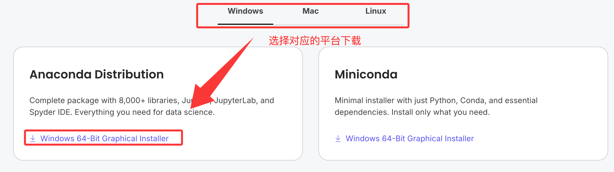
双击打开下载的安装包，选择 Install for me only：
点击 Install 按钮开始安装：
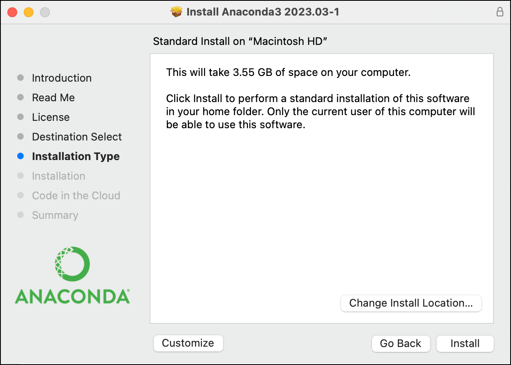
安装完成后，点击 Continue 按钮，即可看到安装完成的界面：
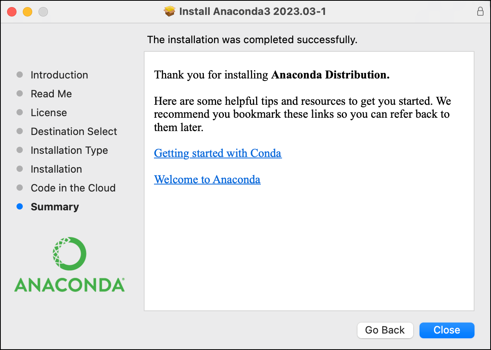
macOS 平台安装的更多细节可以参考官网文档：https://docs.anaconda.com/free/anaconda/install/mac-os/
Windows 平台与 macOS 类似，双击安装包，同意协议后按默认设置一步步点击 Next 即可。
选择安装目录：
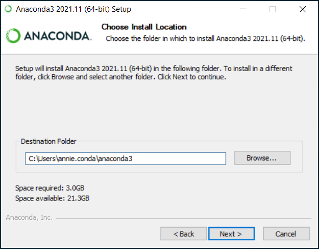
在 Advanced Installation Options 中，不要勾选 Add Anaconda to my PATH environment variable（添加 Anaconda 至环境变量）。
勾选这个选项会影响其他程序对系统 PATH 的使用，安装完成后通过 Anaconda 自带的命令行工具操作即可。
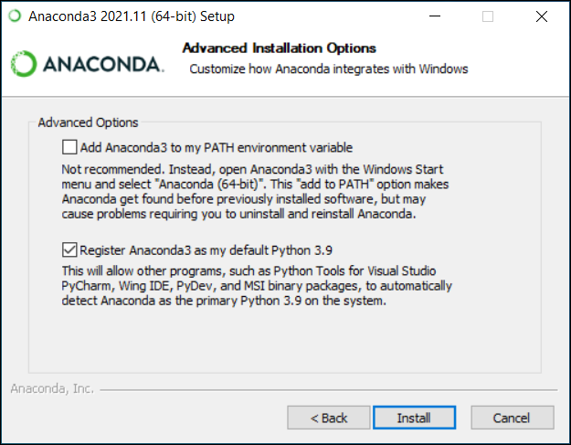
点击 Install 按钮进行安装，安装成功后出现如下界面：
点击 Next 按钮完成安装：
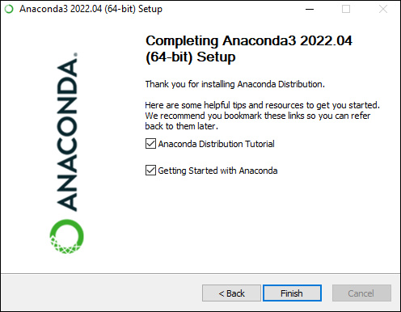
Windows 平台安装的更多细节可以参考官网文档：https://docs.anaconda.com/free/anaconda/install/windows/
Linux 平台通过命令行安装，可以替换命令中的版本号：
# 下载安装脚本（版本号可替换为官网最新版本） curl -O https://repo.anaconda.com/archive/Anaconda3-2023.09-0-Linux-x86_64.sh # 运行安装脚本 bash Anaconda3-2023.09-0-Linux-x86_64.sh
Linux 平台安装的更多细节可以参考官网文档：https://docs.anaconda.com/free/anaconda/install/linux/
安装完成后，可以打开 Anaconda 图形管理界面查看和管理不同的环境：
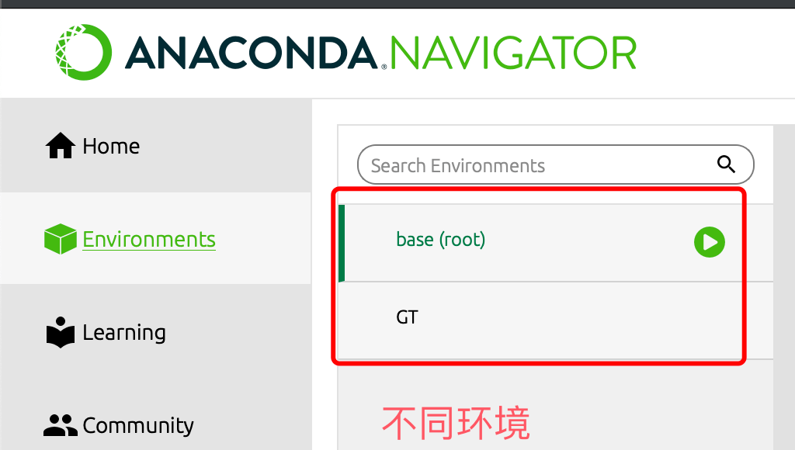
点击 Environments 可以查看已安装的环境：
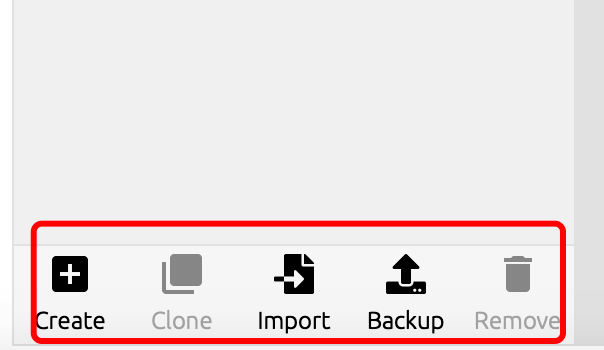
界面底部有创建与删除环境的按钮，可以自由操作。
图形界面适合初学者浏览，但日常开发更推荐使用下面的 conda 命令行方式，速度更快，也便于写脚本自动化。
conda 是 Anaconda 的包管理器，用于安装、更新、卸载软件包，以及创建和管理不同的 Python 环境。
创建一个名为 myenv 的新环境：
# 创建默认版本的环境 conda create --name myenv
创建环境时指定 Python 版本：
# 创建名为 myenv 的环境，并指定 Python 版本为 3.11 conda create --name myenv python=3.11
激活环境：
# 激活名为 myenv 的环境 conda activate myenv
退出当前环境：
conda deactivate
查看所有已创建的环境：
# 当前激活的环境会标记 * 号 conda env list
通过克隆已有环境创建新环境：
# 复制 myenv 环境为 myclone conda create --name myclone --clone myenv
删除环境：
conda env remove --name myenv
conda 的包管理命令与 pip 类似：
| 命令 | 功能 |
|---|---|
| conda install package_name | 安装指定包 |
| conda install package_name=1.2.3 | 安装指定版本的包 |
| conda update package_name | 更新已安装的包 |
| conda remove package_name | 卸载包 |
| conda list | 查看当前环境已安装的所有包及版本 |
| conda search package_name | 在 conda 仓库中搜索包 |
# 查看帮助 conda --help # 查看 conda 版本 conda --version # 清理缓存与不再需要的包 conda clean --all
学完上面的命令，我们来完成本教程后续章节要用的环境：创建一个独立的 quant 环境，并装好量化所需的库。
把环境和项目隔离开，之后即使随意升级其他库，也不会破坏量化环境。
输出结果如下所示：
环境就绪
看到 环境就绪 四个字，说明量化环境搭建完成。
量化研究强烈推荐使用 Jupyter Notebook，它可以把代码、图表和笔记放在同一个文档里，一段一段地执行，非常适合策略研究的迭代过程。
# 在 quant 环境中安装 Jupyter Notebook（可选） conda install jupyter # 启动 Jupyter Notebook jupyter notebook
执行后会自动打开浏览器，新建 Notebook 即可开始编写代码。
注意：一定要先激活 quant 环境再启动 Jupyter，否则 Notebook 会运行在 base 环境中，找不到你安装的量化库。
这一章我们直接用约 20 行 Python 代码跑通第一个完整的量化策略。
你会体验到量化交易的完整流程：获取数据、计算信号、可视化买卖点，先建立整体认知，原理和细节留到后面的章节再补。
双均线策略（Moving Average Crossover）是最经典的量化入门策略，思想只有一句话：
当短期均线上穿长期均线时买入（金叉），下穿时卖出（死叉）。
均线是对过去 N 天收盘价取平均，能过滤掉日常波动、显出趋势。
短期均线比长期均线反应快，当短期均线从下方向上穿越长期均线，说明近期价格走强，趋势可能反转向上，这就是"金叉"买入信号；反之则是"死叉"卖出信号。
短期均线对价格更敏感，所以它总是围绕长期均线上下穿越，每次穿越就对应一次潜在的调仓机会。
提示：双均线是趋势跟踪策略，在趋势明显的行情中表现较好；在反复震荡的行情中会频繁发出假信号。没有在任何行情下都赚钱的策略，这是学习量化要建立的第一认知。
本实例需要用到 4 个库，先安装（环境搭建详见前面的 Python 虚拟环境设置 与 Anaconda 环境搭建 两篇，任选其一即可）：
pip install pandas numpy matplotlib yfinance
| 库 | 作用 |
|---|---|
| yfinance | 从 Yahoo Finance 获取股票、指数等金融历史数据 |
| pandas | 数据处理与分析，本实例用它计算均线和信号 |
| numpy | 数值计算基础库，pandas 的底层依赖 |
| matplotlib | 绘制走势图和买卖信号图 |
我们以贵州茅台（A 股代码 600519，在 Yahoo Finance 中的代码为 600519.SS）为例，获取 2022 年 5 月到 2023 年 12 月的日线数据：
输出结果如下所示：
Close High Low Open Volume
Date
2022-05-05 1587.689087 1616.210448 1580.757515 1581.639101 3366094
2022-05-06 1549.660645 1572.132020 1539.289240 1568.666234 2859618
2022-05-09 1514.224854 1538.424794 1502.124883 1538.424794 3035182
2022-05-10 1526.489136 1542.711757 1473.612320 1486.567923 4011919
2022-05-11 1528.053467 1545.753979 1514.224929 1516.817780 3031267
返回的是一张以日期为索引的表格（Pandas DataFrame），每一行是一个交易日，这就是量化最原始的"原料"。
注意：代码中默认使用复权后的价格计算均线，可以避免分红除权造成的价格跳空失真。数据获取的更多细节（参数、复权、A 股代码规则）将在获取金融数据一章详细展开。
用 pandas 的 rolling().mean() 计算滚动均线，再用条件判断生成买卖信号：
输出结果如下所示：
金叉（买入）: ['2023-02-27', '2023-07-25'] 死叉（卖出）: ['2023-05-29']
策略在 2023 年 2 月底发出买入信号，5 月底卖出，7 月底再次买入。
短短几行代码，一个策略的"大脑"就完成了。把交易思路变成可计算的信号，这正是量化最核心的一步。
注意：均线计算需要足够的历史数据，200 日均线要求至少 200 行数据才会产生数值，所以前面的行会是 NaN（空值），这是正常现象。
把收盘价、两条均线和买卖信号画在一张图上，直观检验策略行为：
执行以上代码，输出的图表如下，绿色三角是买入信号，红色三角是卖出信号，点击图片放大查看：
可以看到，买点都出现在短期均线上穿长期均线之后，卖点出现在下穿之后，策略行为与我们定义的规则完全一致。
画出买卖点只是第一步，策略赚不赚钱需要严谨的回答。
这个问题要用回测来解答：把这套规则放到历史数据上模拟交易，计算年化收益、最大回撤、夏普比率等绩效指标，才能科学评估策略好坏。
提醒：千万不要因为策略在图上看起来很准就直接拿真金白银去交易。未经回测、未考虑交易成本、未经样本外验证的策略，实盘亏损是大概率事件。
双均线只是量化世界的入门款。下表列出了常见的量化策略类型，帮你建立策略版图，其中的大部分思路都会在后续章节中实践：
| 策略类型 | 核心思想 | 典型做法 |
|---|---|---|
| 趋势跟踪 | 价格趋势一旦形成会延续一段时间 | 双均线、海龟交易法则、突破策略 |
| 均值回归 | 价格偏离均值过多后会回归平均水平 | 布林带、配对交易、统计套利 |
| 动量策略 | 过去表现强的资产在未来一段时间继续走强 | 按近期涨幅排序，买入强势组合 |
| 市场中性 | 同时做多与做空，剥离市场整体涨跌的影响 | 做多强势股、做空弱势股的组合 |
| 事件驱动 | 特定事件发生后价格有可预期的反应 | 监控财报、指数调样等事件进行交易 |
| 机器学习策略 | 从大量数据中学习模式，预测未来走势 | 回归、分类或深度学习模型 |
| 高频交易 | 利用极短时间内的小价差，快速大量交易 | 做市策略、跨交易所套利 |
策略的形式可以千变万化，但评价标准是统一的：必须经过充分的回测和风险管理检验。
数据是量化交易的原材料，一切分析与策略都建立在可靠的历史行情数据之上。
Python 中有多个库可以获取金融市场数据，本篇以最常用的 yfinance 为主，同时介绍获取 A 股数据的 AKShare。
yfinance 是一个从 Yahoo Finance 获取金融数据的库，支持股票、指数、基金、外汇、加密货币等，免费且无需注册。
安装如下：
pip install yfinance
yfinance 获取批量历史数据的核心函数是 yf.download()，基本语法格式：
yf.download(tickers, start=None, end=None, period=None, interval="1d",
auto_adjust=True, multi_level_index=True, progress=True, threads=True)
| 参数 | 类型 | 默认值 | 说明 |
|---|---|---|---|
| tickers | 字符串或列表 | 必填 | 要下载的股票、指数代码，单个代码用字符串，多个代码用列表或空格分隔的字符串 |
| start / end | 字符串 | None | 下载数据的开始与结束日期，格式 "YYYY-MM-DD"，默认取能获取的最早/最新日期 |
| period | 字符串 | None | 直接指定时间跨度，如 "1mo"（一个月）、"1y"（一年）、"max"，与 start/end 二选一 |
| interval | 字符串 | "1d" | K 线周期，如 "1m"、"1h"、"1d"、"1wk"、"1mo" |
| auto_adjust | 布尔值 | True | 是否自动复权。True 时价格已复权且不返回 Adj Close 列 |
| multi_level_index | 布尔值 | True | 是否返回多级列名。下载单只股票时设为 False 可得到更简单的单层列 |
| progress | 布尔值 | True | 是否显示下载进度条 |
| actions | 布尔值 | False | 是否包含分红、拆股等公司行动数据 |
| threads | 布尔值 | True | 是否使用多线程下载，批量下载多只股票时更快 |
重要：新版 yfinance（0.2.51 及以上）把 auto_adjust 的默认值改成了 True，下载的价格是复权后的价格，且不再返回 Adj Close 列。老教程里直接用 Close 列做分析的代码，在新版下分析的其实是复权价，这一点阅读旧代码时要特别留意。
不同市场的代码在 Yahoo Finance 中的写法不同，中国 A 股需要加交易所后缀：
| 市场 | 后缀 | 示例 |
|---|---|---|
| 上海证券交易所（A 股） | .SS | 600519.SS（贵州茅台） |
| 深圳证券交易所（A 股） | .SZ | 000568.SZ（泸州老窖） |
| 港股 | .HK | 0700.HK（腾讯控股） |
| 美股 | 无后缀 | AAPL（苹果）、MSFT（微软） |
以下实例获取贵州茅台（600519.SS）的股票数据：
返回的是一张 Pandas DataFrame，包含日期（Date）、开盘价（Open）、最高价（High）、最低价（Low）、收盘价（Close）、复权收盘价（Adj Close）和成交量（Volume）。
Pandas DataFrame 的用法可以参考：Pandas 数据结构 - DataFrame
执行以上代码，输出结果如下：
Adj Close Close High Low Open Volume
Date
2022-01-04 1772.844604 2051.229980 2068.949951 2014.000000 2055.00000 3384262
2022-01-05 1749.310059 2024.000000 2065.000000 2018.000000 2045.00000 2839551
2022-01-06 1713.200317 1982.219971 2036.000000 1938.510010 2022.01001 5179475
2022-01-07 1678.438721 1942.000000 1988.880005 1939.319946 1975.00000 2962670
2022-01-10 1699.181641 1966.000000 1977.000000 1917.550049 1928.01001 2962670
注意对比 Close 与 Adj Close 两列：茅台在区间内有过分红，复权价低于未复权价。
计算收益率和做回测时应使用复权价格，否则分红造成的价格跳空会被误判为暴跌。
关于复权的详细概念，会在数据清洗的相关内容中进一步展开。
除了批量下载，yfinance 还提供 Ticker 类，用于获取特定金融工具的信息和实时数据。
通过 yf.Ticker('代码') 创建对象后，可以访问丰富的属性和方法：
| 属性 / 方法 | 用法 | 说明 |
|---|---|---|
| history() | ticker.history(period="1mo", interval="1d") | 获取历史行情，period 指定跨度，interval 指定周期 |
| info | ticker.info | 公司基本信息：名称、行业、市值等 |
| dividends | ticker.dividends | 分红数据 |
| splits | ticker.splits | 拆股数据 |
| actions | ticker.actions | 公司行动汇总（拆股、分红等） |
| major_holders | ticker.major_holders | 主要持有者持股比例 |
| institutional_holders | ticker.institutional_holders | 机构持股信息 |
| income_stmt | ticker.income_stmt | 年度利润表 |
| balance_sheet | ticker.balance_sheet | 资产负债表 |
| cashflow | ticker.cashflow | 现金流量表 |
| calendar | ticker.calendar | 财务日历，如财报发布日期 |
| news | ticker.news | 相关新闻 |
以下代码以微软（MSFT）为例，演示 Ticker 类的常用操作：
执行以上代码，输出结果如下：
Open High Low Close Volume Dividends Stock Splits
Date
2026-10-16 00:00:00-04:00 541.309998 543.820007 524.429993 529.049988 24845700 0.0 0.0
2026-10-19 00:00:00-04:00 528.700012 535.570007 528.059998 533.520020 17994900 0.0 0.0
2026-10-20 00:00:00-04:00 533.909973 534.210022 525.840027 531.869995 14576000 0.0 0.0
与 download 不同，history() 返回的表格自带 Dividends（分红）和 Stock Splits（拆股）两列。
批量研究时经常需要同时获取多只股票的数据，有两种方式：
yfinance 的 A 股数据来自 Yahoo Finance，存在更新延迟，做 A 股研究更推荐使用国内数据源。
AKShare 是一个免费开源的财经数据接口库，覆盖股票、期货、期权、基金、债券、宏观等数据，无需注册 token。
安装如下：
pip install akshare
执行以上代码，输出结果如下（列名为中文，直接可读）：
日期 股票代码 开盘 收盘 最高 最低 成交量 成交额 振幅 涨跌幅 涨跌额 换手率
0 2024-01-02 600519 1580.66 1550.67 1583.85 1543.76 32156 5.440083e+09 2.52 -2.58 -40.99 0.26
1 2024-01-03 600519 1546.77 1559.66 1560.88 1541.99 20229 3.411401e+09 1.22 0.58 8.99 0.16
2 2024-01-04 600519 1558.66 1534.66 1558.66 1528.59 21551 3.603970e+09 1.93 -1.60 -25.00 0.17
与 yfinance 相比，AKShare 直接提供涨跌幅、换手率等衍生指标，还支持板块资金流、龙虎榜等 A 股特色数据。
除了 yfinance 和 AKShare，还有不少优秀的金融数据库，按市场和研究需求选择：
| 库 | 主要覆盖 | 特点 | 安装命令 |
|---|---|---|---|
| yfinance | 美股、A 股、港股、全球指数、加密货币 | 免费无需注册，国际市场首选 | pip install yfinance |
| AKShare | A 股、期货、基金、债券、宏观 | 免费开源，接口丰富，无需 token | pip install akshare |
| Tushare | A 股为主 | 需注册获取 token，积分制，数据质量高 | pip install tushare |
| baostock | A 股、港股、期权 | 免费，适合获取证券基本信息与日线数据 | pip install baostock |
| pandas-datareader | 聚合多个在线数据源 | 老牌工具，部分数据源已失效，谨慎选用 | pip install pandas-datareader |
| alpha_vantage | 美股、外汇、加密货币 | 需注册免费 API key，自带技术指标计算 | pip install alpha_vantage |
| Quandl | 金融与经济数据 | 已并入 Nasdaq Data Link，需注册 | pip install quandl |
| ccxt | 加密货币交易所 | 统一接口连接上百家交易所，支持行情与交易 | pip install ccxt |
选型建议：研究美股和全球市场用 yfinance；研究 A 股用 AKShare 或 Tushare；做加密货币用 ccxt。数据源只是工具，重要性远低于后面的策略研究本身。
拿到数据后，下一步是用图表看清它，进入数据可视化一章。
Python 量化数据可视化主要使用 Matplotlib 和 Seaborn 两个库。
安装可以在终端或命令提示符中运行：
pip install matplotlib seaborn
Matplotlib 的系统用法可以参考：Matplotlib 教程。
本篇重点介绍 Seaborn 在量化数据分析中的应用。
Seaborn 是一个基于 Matplotlib 的数据可视化库，专注于统计图形的绘制。
它在 Matplotlib 之上提供了更高层次的接口和更美观的默认主题，用更少的代码画出更好看的统计图表。
Seaborn 内置了一批经典数据集，配合内置绘图函数，一行代码就能画出统计图形：
函数名即图形类型：scatterplot 散点图、lineplot 折线图、barplot 柱状图、histplot 直方图，对初学者非常友好。
Seaborn 提供内置主题，一行代码改变图表外观：
对于带分类维度的数据，Seaborn 可以轻松创建分组柱状图、箱线图等：
Seaborn 提供专门可视化矩阵数据的函数，最常用的是热力图（heatmap），量化中常用来展示相关性矩阵：
分面绘图可以根据数据的子集创建多个小图，全面展示数据在不同维度下的表现：
进入量化场景，结合 yfinance 获取贵州茅台（600519.SS）的股票数据，然后用 Seaborn 绘制收盘价走势图：
执行以上代码，输出结果为：
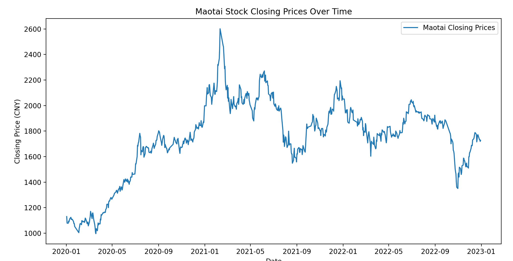
相比直接用 Matplotlib，Seaborn 的默认配色与网格让图表质感明显更好，且代码量几乎相同。
相关性分析是组合研究的起点：如果两只股票涨跌高度同步，同时持有它们起不到分散风险的作用。
下面的实例计算白酒板块三只龙头股（贵州茅台、五粮液、泸州老窖）日收益率之间的相关性，并用热力图展示：
先看输出的相关性矩阵：
Ticker 000568.SZ 000858.SZ 600519.SS Ticker 000568.SZ 1.000 0.842 0.773 000858.SZ 0.842 1.000 0.770 600519.SS 0.773 0.770 1.000
三只股票两两相关性在 0.77 到 0.84 之间，属于高度相关。
这说明同行业股票往往同涨同跌，构建投资组合时应避免资金过度集中在单一行业，否则"分散"只是形式上的。
执行代码后还会弹出热力图，效果如下图所示（颜色越红代表相关性越强）：
注意：vmin=-1, vmax=1 把色条范围固定在相关性的理论区间，让不同图表之间可以直接对比；不加这个参数时，色条范围会随数据自动伸缩。
Matplotlib 和 Seaborn 不是二选一的关系，实践中通常配合使用：
| 场景 | 推荐工具 |
|---|---|
| 快速探索数据、统计图表 | Seaborn，代码少、默认样式好 |
| 精细控制图表每个细节 | Matplotlib，自由度最高 |
| 量化专属图形（K 线图等） | 需要专门库，见 股票 K 线图 |
| 网页交互式图表 | pyecharts、Plotly |
做量化不需要金融科班出身，但必须看懂一批反复出现的核心概念。
这一篇集中讲清楚两类术语：量化交易术语和金融市场基本概念，并动手计算最基础的两个量——收益率与波动率。
掌握本篇内容后，阅读后续的策略与回测章节就不会有语言障碍。
以下术语贯穿整个教程，先混个脸熟，后续章节会反复实践：
| 术语 | 含义 |
|---|---|
| 策略（Strategy） | 定义了在何时、以何种条件买卖的交易系统，可以基于技术指标、统计模型或机器学习 |
| 因子（Factor） | 用于衡量资产特征的数值，如均线、市值、市盈率等，是构建策略的原材料 |
| 信号（Signal） | 根据策略和因子生成的交易指令，告诉程序何时买入或卖出 |
| 回测（Backtesting） | 在历史数据上模拟执行策略并评估表现的过程，是验证策略的必经环节 |
| Alpha | 策略相对于市场基准的超额收益，正的 Alpha 表示策略跑赢了基准 |
| Beta | 策略相对市场整体波动的敏感度，Beta 大于 1 表示比市场波动更剧烈 |
| 夏普比率（Sharpe Ratio） | 风险调整后收益指标，计算方式为（策略收益率 - 无风险利率）/ 策略波动率，越高越好 |
| 最大回撤（Maximum Drawdown） | 历史上一段时期内从最高点到最低点的最大跌幅，衡量策略最惨时亏多少 |
| 资金管理（Money Management） | 通过仓位控制、分散投资等手段保护资金的方法 |
下面这些概念描述的是金融市场本身的运作方式：
| 概念 | 含义 |
|---|---|
| 股票（Stock） | 公司的所有权凭证，购买股票即成为股东，有权分享公司利润 |
| 投资组合（Portfolio） | 由多种资产（股票、债券、期货等）构成的一揽子投资，通过分散降低风险 |
| 风险管理（Risk Management） | 识别、衡量和控制投资中潜在风险的方法，量化领域主要依靠统计模型 |
| 收益（Return） | 投资的盈利，通常以百分比表示，需要结合风险一起评估 |
| 算法交易（Algorithmic Trading） | 用预定的规则和数学模型驱动计算机自动交易 |
| 量化模型（Quantitative Model） | 用数学和统计学工具分析、预测金融市场行为的模型 |
| 高频交易（High-Frequency Trading） | 以极快的速度进行大量交易，从微小价差中获利 |
| 套利（Arbitrage） | 同时买卖同一或相似资产，利用价差获取低风险利润 |
| 蒙特卡洛模拟（Monte Carlo Simulation） | 生成大量随机样本来评估投资组合风险和收益的数学技术 |
提示：术语不用死记硬背。建议遇到不认识的词先查表，在后续章节的实际代码中见到它们时，理解会自然加深。
收益和风险是量化世界的两根基准线，它们都有标准的计算方式。
收益率衡量价格的变化幅度，常用的有两种口径：
简单收益率是价格变化的比例，直观易懂；对数收益率是价格比值的自然对数，具有可加性，多期收益直接相加即可，研究中更常用。
输出结果如下所示：
2024-01-02 0.0200 2024-01-03 -0.0098 2024-01-04 0.0396 2024-01-05 0.0190 2024-01-06 -0.0093 Freq: D 2024-01-02 0.0198 2024-01-03 -0.0099 2024-01-04 0.0388 2024-01-05 0.0189 2024-01-06 -0.0094 Freq: D
第一天买入价 100 元、涨到 102 元，简单收益率就是 2%，与直觉一致。
两种收益率在涨跌幅很小时数值几乎相同，涨跌幅越大差异越明显，后面章节两种都会用到。
波动率（Volatility）衡量收益率的波动剧烈程度，通常用收益率的标准差表示。
日波动率数值太小不直观，行业惯例是乘以 252 的平方根（一年约有 252 个交易日）折算成年化波动率：
输出结果如下所示：
年化波动率: 33.74%
注意：示例只有 6 天数据，算出的波动率仅供参考方法。实际研究中通常使用至少一年的日线数据来估计波动率，数据越充分估计越稳定。
收益率和波动率组合起来，就能得到评价策略的三大经典指标，这里先建立直觉，具体计算在回测与绩效评估一章完整实践：
| 指标 | 回答的问题 | 计算思路 |
|---|---|---|
| 年化收益率 | 策略平均一年赚多少 | 把任意时长的累计收益按复利折算到一年 |
| 夏普比率 | 每承担一单位波动，换来多少超额收益 | （年化收益率 - 无风险利率）/ 年化波动率 |
| 最大回撤 | 历史上最深的一次下跌有多惨 | 净值从峰值跌到谷底的最大幅度 |
只看收益率选策略是新手最常见的错误：年化 50% 但最大回撤 60% 的策略，大部分人拿不住。
夏普比率之所以重要，是因为它同时看收益和风险：通常认为夏普比率大于 1 的策略比较优秀，小于 0.5 则要谨慎。
本章节介绍量化金融领域常用的 Python 库，并重点演示两个回测框架：zipline 与 Backtrader。
按用途划分，量化研究常用的库有这些：
| 库 | 用途 | 安装命令 |
|---|---|---|
| zipline | 事件驱动回测框架，Quantopian 公司出品 | conda install -c conda-forge zipline |
| Backtrader | 功能全面的 Python 回测框架，社区活跃 | pip install backtrader |
| QuantLib | 金融工具定价与金融计算（期权、债券等） | pip install QuantLib |
| TA-Lib | 技术指标计算库，内置 150 多个指标 | pip install TA-Lib |
| pyfolio | 投资组合绩效分析，可与回测框架集成生成分析报告 | pip install pyfolio |
| statsmodels | 统计建模：线性回归、时间序列分析等 | pip install statsmodels |
本篇重点是前两个回测框架，其余库在对应主题中按需引入。
zipline 是一个用于量化金融研究和算法交易的开源框架，由 Quantopian 公司开发，为研究员提供构建、测试和执行量化交易策略的完整工具链。
注意：Quantopian 平台已于 2020 年停止运营，zipline 官方版本停留在 1.3.0，对新版 Python 的兼容性较差。新项目建议优先使用社区维护版 zipline-reloaded，或直接使用下面介绍的 Backtrader。本节内容保留，便于阅读既有资料时理解。
zipline 依赖较多，推荐使用 Anaconda 安装，避免出现依赖冲突：
conda install -c conda-forge zipline
zipline 回测需要特定格式的数据包（bundle），常用 quandl 数据源。
先登录 quandl 官网注册，获得 api key，然后设置环境变量：
# Windows 系统 set QUANDL_API_KEY=你的key # macOS / Linux 系统 export QUANDL_API_KEY=你的key
下载数据包：
zipline ingest -b quandl
查询已下载的数据包：
zipline bundles
输出内容如下所示：
csvdir <no ingestions> quandl 2023-12-09 06:02:03.178299 quandl 2023-12-09 05:59:04.273082 quandl 2023-12-09 05:54:57.277732 quandl 2023-12-09 05:52:15.532504 quandl 2023-12-09 03:32:03.853032 quantopian-quandl <no ingestions>
zipline 策略是一个 Python 脚本，核心是 initialize（初始化）和 handle_data（每个交易日调用）两个函数：
order(symbol('AAPL'), 10) 表示在每个交易日以当前价格购买 10 股苹果公司股票。
record(...) 则把当日的股价记录下来，回测结束后可以画出价格曲线。
使用 zipline run 命令执行回测：
zipline run -f my_strategy.py --start 2016-1-1 --end 2018-1-1 -o buyapple_out.pickle --no-benchmark
输出内容如下所示：
Simulated 503 trading days first open: 2016-01-04 14:30:00+00:00 last close: 2017-12-29 21:00:00+00:00
| 命令参数 | 说明 |
|---|---|
| -f my_strategy.py | 指定策略文件 |
| --start / --end | 指定回测的起始和结束日期 |
| -o buyapple_out.pickle | 指定输出文件，回测的交易记录和绩效数据保存在其中 |
| --no-benchmark | 不设置业绩比较基准 |
回测结果是一个 pickle 文件，用标准库 pickle 模块读取：
输出内容是一个按日索引的 DataFrame，包含每日盈亏（pnl）、持仓市值、杠杆率等字段：
period_open period_close short_value pnl long_exposure ... max_leverage excess_return treasury_period_return trading_days period_label
2016-01-04 21:00:00+00:00 2016-01-04 14:31:00+00:00 2016-01-04 21:00:00+00:00 0.0 0.00000 0.0 ... 0.000000 0.0 0.0 1 2016-01
Backtrader 是目前社区最活跃的 Python 回测框架之一，纯 Python 实现、安装简单、文档齐全，支持股票、期货、加密货币等多市场回测。
安装如下：
pip install backtrader
Backtrader 的架构围绕几个核心对象展开：
| 对象 | 角色 |
|---|---|
| Cerebro | 回测引擎的"大脑"，负责加载数据、策略并驱动整个回测流程 |
| Data Feed | 数据源，把 pandas DataFrame 等格式的行情数据喂给引擎 |
| Strategy | 策略类，引擎逐根 K 线调用它的 next() 方法，在这里写交易逻辑 |
| Indicator | 指标（如 SMA、CrossOver），声明后引擎自动完成计算和对齐 |
| Broker | 模拟券商，管理资金、订单撮合和手续费 |
| Analyzer | 分析器，自动统计收益、回撤、交易次数等绩效数据 |
用 Backtrader 重做上一篇的双均线策略：10 日均线上穿 30 日均线买入，下穿卖出：
输出结果如下所示：
初始市值: 100000.00 最终市值: 100434.33
策略三年间小幅盈利 434 元。对比一下上一篇手写的向量化回测，Backtrader 帮我们处理了撮合时点、手续费、资金占用等细节，这正是框架的价值。
注意：本例每笔买入 10 股，按茅台约 1800 元的股价占用资金约 1.8 万元，10 万元初始资金足够。如果改成一次买入 100 股（约 18 万元），订单会因资金不足被引擎直接拒绝。另外 A 股实盘最小交易单位是 1 手（100 股），本例为演示方便未按手数取整。
Backtrader 还内置了丰富的分析器，一行代码即可输出完整的绩效报告：
输出结果如下所示（本例仓位很轻，仅 10 股，回撤和夏普数值仅作演示）：
夏普比率: -0.01632125043146268 最大回撤: 3.78%
| 框架 | 优势 | 适合场景 |
|---|---|---|
| 手写 pandas 回测 | 完全透明，理解原理的最佳途径 | 学习阶段、快速验证简单想法 |
| Backtrader | 安装简单、文档全、社区活跃 | 个人研究者的主力回测框架 |
| zipline | 工程化程度高，与 Quantopian 研究体系一脉相承 | 阅读存量资料；新项目建议用 zipline-reloaded |
| VectorBT | 向量化计算，批量参数优化速度极快 | 大规模参数扫描、策略筛选 |
建议：从手写回测入门，理解原理后切换到 Backtrader 做日常研究。框架再成熟，也替代不了你对未来函数、过拟合这些陷阱的警惕。
再次提醒：本教程所有内容仅用于技术学习，不构成任何投资建议。
回测（Backtesting）是在历史市场数据上模拟和评估一个交易策略的过程。
它是量化交易最关键的一环：策略在过去的表现不能保证未来，但没有历史验证的策略连讨论的资格都没有。
本篇将手写一个完整的向量化回测，计算四大绩效指标，并讲透新手最容易踩的几个回测陷阱。
一次规范的回测，通常包含以下环节：
| 步骤 | 说明 |
|---|---|
| 定义交易策略 | 确定何时买入、卖出或持仓的规则，如均线交叉、突破、套利条件等 |
| 获取历史数据 | 取得回测区间内的价格、成交量等数据 |
| 模拟交易 | 按策略规则在历史数据上逐日生成信号并计算每笔交易的盈亏 |
| 计算绩效指标 | 统计年化收益率、最大回撤、夏普比率等，量化评估策略表现 |
| 优化与再验证 | 结果不理想时调整参数重测；结果理想时也要换一段未参与调参的数据验证 |
整个流程环环相扣，优化之后必须回到模拟环节重新验证，形成闭环：
不借助任何回测框架，直接用 pandas 把双均线策略放到 2019 至 2021 年的茅台数据上模拟一遍。
自己动手写一遍的最大好处，是看清回测的每个细节到底发生了什么：
执行以上代码，输出的图表如下，蓝线是策略净值，绿线是买入持有净值：
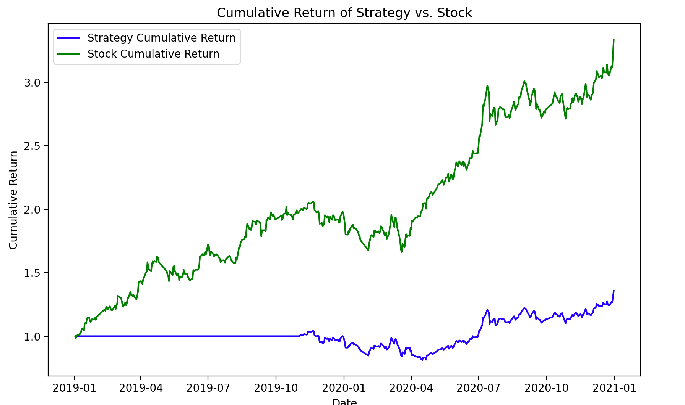
核心细节：data["Signal"].shift(1) 这一行是回测公平性的基石。今天的收益必须由昨天的信号决定，因为今天的信号要等今天收盘后才能算出来，当天不可能按它成交。漏掉这个 shift，回测收益会虚高得离谱，这就是未来函数，下文会专门展开。
净值曲线只是直观感受，评价策略需要数字。
接着上面的代码，计算年化收益率、年化波动率、夏普比率和最大回撤：
输出结果如下所示：
策略累计收益: 36.29% 买入持有累计收益: 242.46% 年化收益率: 17.45% 年化波动率: 21.71% 夏普比率: 0.67 最大回撤: -22.47%
指标解读如下表：
| 指标 | 本次回测值 | 怎么看 |
|---|---|---|
| 累计收益 | 36.29% | 区间总收益，但单看它容易被区间长短误导 |
| 年化收益率 | 17.45% | 折算到每年的收益，可与任何策略直接对比 |
| 年化波动率 | 21.71% | 净值的颠簸程度，越大持有体验越差 |
| 夏普比率 | 0.67 | 一般大于 1 优秀、0.5 以下谨慎，0.67 属于中规中矩 |
| 最大回撤 | -22.47% | 最惨时亏 22%，想想自己能否扛住 |
一个诚实的结论：这两年茅台本身大涨 242%，双均线策略反而大幅跑输买入持有。趋势策略会错过单边上涨行情中的大部分涨幅，这是策略性格决定的，不是代码写错了。回测的意义正在于此——用数据认清策略的适用边界，而不是证明它无所不能。
回测最大的危险不是算错，而是算得"太漂亮"。以下三个陷阱能让一个垃圾策略在回测里表现得像印钞机。
未来函数指计算信号时用到了信号产生时刻还不可能知道的数据。
它是最隐蔽也最致命的陷阱，常见形态与正确写法对比如下：
| 写法 | 代码 | 问题 |
|---|---|---|
| 错误 | data["Signal"] = (data["Close"].shift(-1) > data["Close"]).astype(int) | 用明天的收盘价判断今天的信号，等于提前看答案 |
| 正确 | data["Position"] = data["Signal"].shift(1) | 今天收盘算出信号，次日才执行，信号与可执行性对齐 |
判断标准只有一句话：在每个时间点，策略用到的所有数据都必须不晚于该时刻。
使用当日收盘价算均线再在当日成交，同样属于轻微的未来函数——实盘中你无法保证恰好以收盘价成交，严谨的做法是次日以开盘价成交。
把均线参数从 50/200 调到 48/195，回测收益提高了 5 个点，再微调一次又提高 3 个点——如果沿着这条路走到黑，你优化的不是策略，而是这段历史数据的噪声。
这就是过拟合：参数完美适配了过去，但对未来毫无预测力。
与之相伴的是数据窥探（Data Snooping）：反复尝试不同策略和参数，直到某一次回测结果好看为止，试的次数越多，撞上"偶然好看"的概率越大。
防范方法是样本内 / 样本外分离：只用前一段数据调参数（样本内），调好后放到从未参与优化的后一段数据上验证（样本外），样本外表现才接近真实水平。更严谨的做法是滚动向前验证（Walk-Forward）。
如果只用"今天还活着的股票"做历史回测，就悄悄剔除了所有退市股。
退市股往往是暴跌的那批，剔除它们会让回测收益系统性偏高。
防范方法是在股票池中加入历史退市股票，或使用包含退市股的专业数据源。
还有一个隐形陷阱：交易成本。上面的回测没有计算佣金和滑点，双均线这类低频策略影响尚小，而高换手策略在计入万三佣金加滑点后，回测收益可能直接由正转负。任何回测都应设置与实际一致的费率。
K 线图是金融领域最经典的图表，一根 K 线浓缩了一个周期的开盘价、收盘价、最高价、最低价。
我们可以通过 Python pyecharts 模块来绘制交互式股票 K 线图。
pyecharts 是一个基于 ECharts 的 Python 数据可视化库，生成的图表支持缩放、拖动、数据缩放等交互操作，特别适合展示行情数据。
先确保安装了 pyecharts 和数据获取库 yfinance：
pip install pyecharts yfinance
导入相关模块：
from pyecharts import options as opts from pyecharts.charts import Kline
Kline 图的数据是一个二维数组，每一根 K 线对应一个四元素子数组：
链式调用的结构很直观：add_xaxis 设置 x 轴（日期），add_yaxis 添加 K 线数据系列，set_global_opts 设置标题、坐标轴等全局配置。
当前目录会生成一个 kline_chart.html 文件，用浏览器打开，图表显示如下：
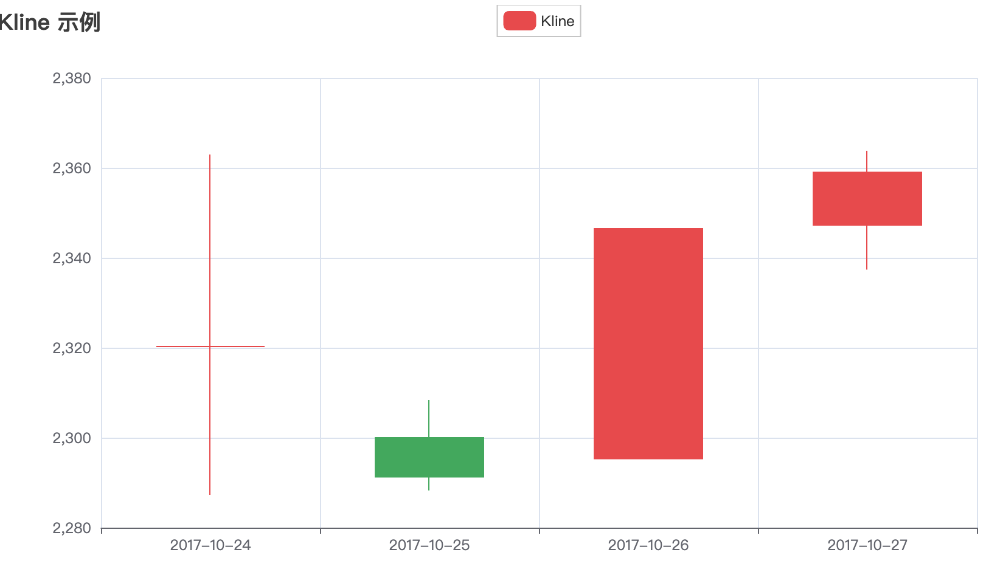
易错点：Kline 的数据顺序固定为 [开盘价, 收盘价, 最低价, 最高价]，注意最低价和最高价的顺序，这是初学者最容易搞错的地方，顺序错了 K 线形态会全部失真。
实际使用时，数据来自行情接口。下面的实例用 yfinance 获取贵州茅台的股票数据并生成 K 线图：
代码中有两处细节值得注意：
一是 multi_level_index=False，新版 yfinance 下载单只股票默认返回多级列名，逐行取值时会导致类型错误，加这个参数直接得到单层列。
二是用 stock_data[["Open", "Close", "Low", "High"]].values.tolist() 一次性按列名提取并转成列表，既避免了逐行遍历的低效，也天然保证了 K 线要求的列顺序。
当前目录会生成一个 maotai_kline_chart.html 文件，打开该文件图表显示如下：
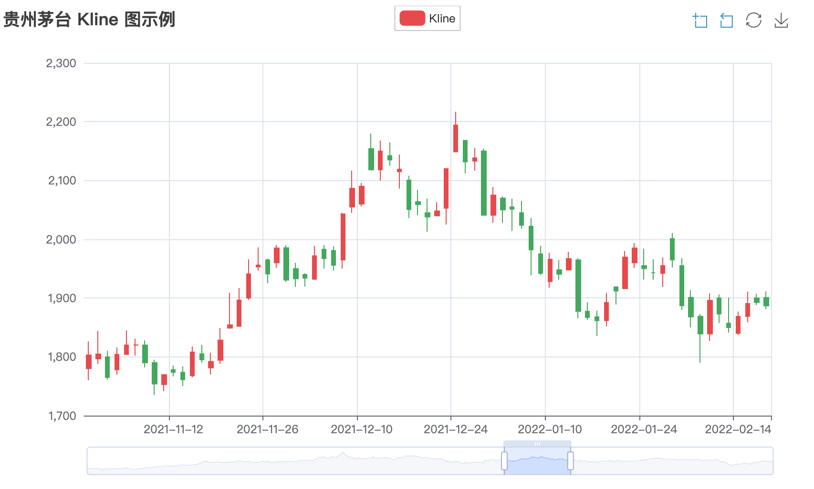
配置中的 DataZoomOpts 提供了底部缩放滑块，可以拖动查看任意时间窗口的 K 线；ToolboxOpts 则提供框选缩放、还原和导出图片按钮。
除了 K 线图，pyecharts 也可以绘制普通曲线图。以茅台（600519.SS）为例绘制收盘价走势：
当前目录会生成一个 maotai_stock_trend_chart.html 文件，打开该文件图表显示如下：
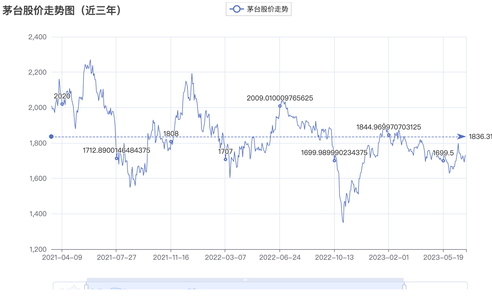
在此基础上可以叠加更多交互工具，比如内嵌缩放（鼠标滚轮缩放）加滑块缩放的组合：
当前目录会生成一个 maotai_stock_trend_chart2.html 文件，打开该文件图表显示如下：
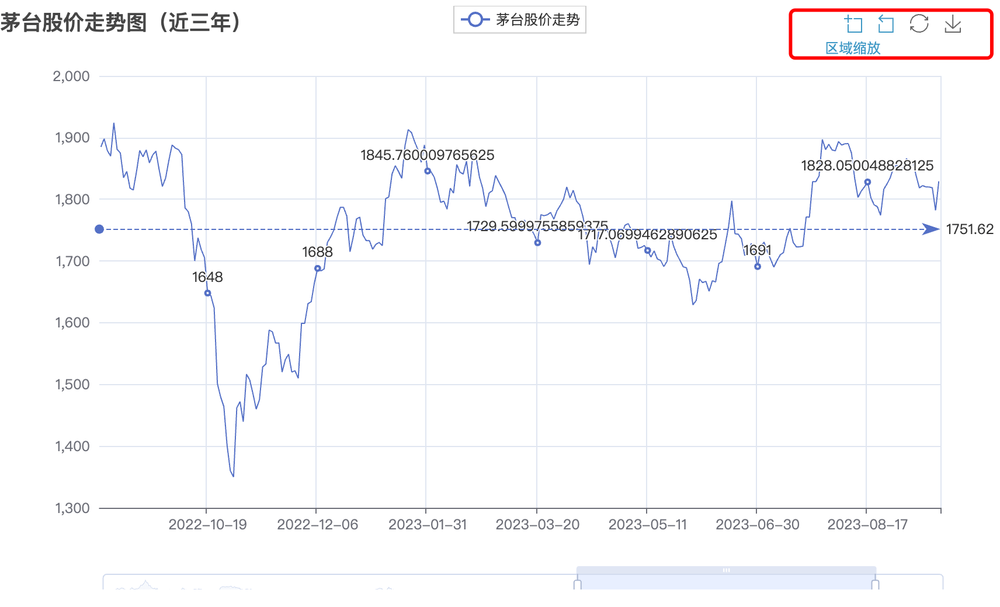
交互式图表不只是好看：研究行情时可以快速缩放到任意区间，检查策略信号在细节处的表现，这比静态图高效得多。
代码之外，量化交易者必须理解市场本身的规则：有什么资产可以交易、什么时候能交易、价格为什么会跳空、每笔交易要付出多少成本。
这些规则直接决定策略的写法——不考虑 T+1 和涨跌停的回测，结论是不可信的。
量化交易的对象是各种金融资产，常见的有以下几类：
| 资产 | 是什么 | 风险水平 |
|---|---|---|
| 股票 | 公司所有权凭证，收益来自价差与分红 | 中高 |
| 债券 | 债务凭证，到期还本付息，价格与利率反向 | 低 |
| 公募基金 / ETF | 一篮子资产的集合投资，ETF 可像股票一样场内交易 | 视底层资产而定 |
| 期货 | 约定未来某时点以某价格买卖的标准化合约，自带杠杆、可双向交易 | 高 |
| 期权 | 买入"在未来以约定价格买卖的权利"，买方最大损失为权利金 | 高（卖方风险极大） |
| 外汇 | 不同国家货币之间的兑换交易，全球最大交易市场 | 中高 |
| 加密货币 | 7×24 小时交易、无涨跌停限制、波动极大 | 极高 |
本教程的实例以股票为主，这也是个人量化入门最合适的品种。
写策略前先记住 A 股的几条硬规则：
| 规则 | 内容 | 对策略的影响 |
|---|---|---|
| 交易时段 | 工作日 9:30-11:30、13:00-15:00 | 日线策略以"交易日"为单位 |
| T+1 | 当天买入的股票次日才能卖出 | 无法当天买当天卖，日内回转受限 |
| 涨跌停 | 主板 ±10%，创业板/科创板 ±20%，ST 股 ±5% | 涨停买不进、跌停卖不出，回测要模拟 |
| 最小单位 | 买入须为 100 股（1 手）整数倍，卖出可不足 100 股 | 仓位计算要按手取整 |
| 价格最小变动 | 0.01 元 | 限价单价格只能落在 0.01 的网格上 |
其中涨跌停对回测影响最大：跌停日股票"卖不出去"，策略的实际执行可能与信号不一致，严谨的回测框架会专门处理这一点。
| 规则 | A 股 | 港股 | 美股 | 加密货币 |
|---|---|---|---|---|
| 结算制度 | T+1 | T+2 交易，可日内回转 | T+1 结算，可日内回转 | 实时 |
| 涨跌幅限制 | ±10% / ±20% | 无（有市调机制） | 无（有熔断机制） | 无 |
| 最小单位 | 100 股 | 1 手（各股不同） | 1 股（支持碎股） | 任意数量 |
| 做空 | 融券（受限） | 可卖空 | 可卖空 | 合约可做空 |
| 交易时间 | 4.5 小时/日 | 5.5 小时/日 | 6.5 小时/日 | 7×24 |
提示：市场差异意味着策略不能直接照搬。美股上验证的日内策略拿到 A 股会受 T+1 限制；A 股的涨跌停规则在加密货币市场则完全不存在。跨市场移植策略时，先核对规则表。
第 6 篇介绍数据获取时提过复权，这里把它彻底讲清楚。
上市公司分红、送股后，股价会在除权除息日出现人为的"跳空下跌"：比如每股分红 25 元，除权日开盘价会直接比前一日收盘价低 25 元左右。
这个跳空不是市场下跌，如果直接用未复权价格计算收益率，每次分红都会被误判成一次暴跌。
复权就是消除这个人为跳空的处理方式，常用两种口径：
| 口径 | 做法 | 用途 |
|---|---|---|
| 前复权 | 以当前价格为基准，向前调整历史价格 | 看图、计算收益率，最常用 |
| 后复权 | 以上市首日为基准，向后调整 | 计算长期真实总回报 |
| 不复权 | 原始价格 | 查看历史真实成交价 |
贵州茅台在 2023 年 6 月 30 日除权除息，每股派现约 25.9 元。对比除权日前后的未复权价与复权价：
输出结果如下所示（节选除权日前后）：
Close Adj Close
Date
2023-06-27 1711.05 1513.83
2023-06-28 1728.38 1529.16
2023-06-29 1713.71 1516.19
2023-06-30 1691.00 1519.06
2023-07-03 1724.10 1548.80
2023-07-04 1730.60 1554.63
2023-06-30 25.911
未复权 Close 在 6 月 30 日从 1713.71 跌到 1691.00，看似下跌 1.3%；而复权价 Adj Close 实际从 1516.19 涨到 1519.06——除权日持有者真实是赚钱的，分红已经落袋。
把 2019 至 2024 年的两条价格曲线画在一起，除权日的大量"假下跌"清晰可见：
执行以上代码，输出的图表如下：
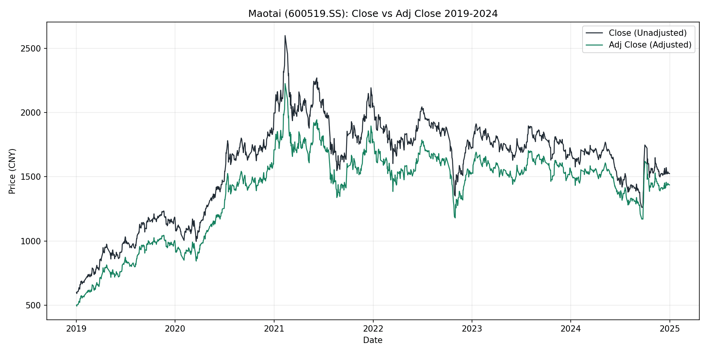
两条曲线的裂口都出现在每年 6 月前后的分红除权日。未复权曲线越往后"跌得越多"，纯属分红累积的假象。
结论：计算收益率、均线、回测一律使用复权价格；只有查看"历史上真实成交了多少块钱"时才看未复权价。yfinance 用 auto_adjust 参数控制，AKShare 用 adjust="qfq"（前复权）/"hfq"（后复权）控制，详见获取金融数据。
回测里每一笔交易都不是免费的，A 股交易的主要成本如下：
| 费用 | 费率 | 收取方向 |
|---|---|---|
| 佣金 | 常见万 2.5 至万 3，多数券商有 5 元起收门槛 | 买卖双边 |
| 印花税 | 0.05% | 仅卖出单边 |
| 过户费 | 0.001% | 买卖双边 |
| 滑点 | 无固定值，取决于流动性 | 隐性成本 |
双边合计约 0.06% 至 0.1%，单边卖出再加 0.05% 印花税。
换个角度看：一次完整的买卖循环大约损耗 0.13% 到 0.16%。年换手 100 次的策略，光成本就要吃掉 13% 到 16% 的收益。
注意：以上费率以券商与交易所最新公告为准。滑点指实际成交价与信号价格的偏差，流动性差的股票或快速波动的行情中滑点可能远超手续费。回测时务必设置与实际一致的费率。
原始金融数据几乎是"脏"的：停牌造成缺失、分红造成跳空、极端行情造成离群点。
垃圾进、垃圾出——输入数据的质量直接决定回测结论的可信度。
本篇用真实的茅台数据演示四类最常用的清洗操作。
拿到一份数据后，通常要检查并处理以下四类问题：
| 问题 | 来源 | 处理方式 |
|---|---|---|
| 缺失值 | 停牌、上市初期、数据源漏传 | 前向填充或剔除 |
| 异常值 | 真实极端行情、数据错误 | 先甄别真假，再决定处理 |
| 价格跳空 | 分红送股除权 | 改用复权价格 |
| 频率不齐 | 不同市场交易日历不同 | 重采样与对齐 |
上一篇文章已经讲过价格跳空的成因与复权处理，本篇聚焦其余三类。
先人为制造缺失，再演示标准处理流程。金融时间序列首选前向填充：停牌期间没有新价格，用最近一个有效价格代替最合理。
输出结果如下所示：
挖空后缺失数: 3 ffill 填充后缺失数: 0 Date 2019-01-15 550.41 2019-01-16 550.41 2019-01-17 550.41 2019-01-18 550.41 2019-01-21 572.93
三行缺失都被填充为 1 月 15 日的收盘价 550.41，直到 1 月 21 日出现新价格。
注意：不要用后向填充 bfill 处理回测数据——它把"未来的价格"填进了"过去的日期"，属于典型的未来函数。同理，用均值、中位数填充时间序列也会引入前晚于时点该知道的信息之外的不自然结构。
收益率序列中最常用的异常值判据是 3σ 原则：偏离均值超过 3 倍标准差的点视为异常。
但对金融数据要格外小心：超过 3σ 的点未必是错误，可能只是真实的极端行情。
输出结果如下所示：
日收益率均值 0.0901% 标准差 1.8671% 3σ 异常点 22 个: Date 2020-07-16 -0.0790 2021-09-27 0.0950 2022-10-24 -0.0756 2022-11-01 0.0830 2024-09-24 0.0880 2024-09-26 0.0929 2024-09-30 0.0729 2024-10-09 -0.0742 ...（共 22 个）
抽查几个日期就能确认：2020 年 7 月 16 日是白酒板块大跌，2024 年 9 月末是政策驱动的全面暴涨——这些都是真实行情，绝不能删。
正确的工作流是：先用 3σ 或四分位距（IQR）把离群点捞出来，逐一核对是不是数据错误（比如小数点错位、价格为 0、复权漏调），只有确认是错误的才修正。
易错点：新手常把涨跌停日的 ±10% 当异常值删掉，这等于删掉了 A 股最真实的制度特征。异常值检测的目的是"发现"，不是"删除"。
研究周线、月线级别策略时，需要把日线重采样为更低频率。pandas 的 resample 一行搞定：
输出结果如下所示：
周线末 3 行: Date 2024-12-20 1433.74 2024-12-27 1440.31 2025-01-03 1436.57 Freq: W-FRI 月线末 3 行: Date 2024-10-31 1417.04 2024-11-30 1415.14 2024-12-31 1436.57 Freq: ME
重采样时聚合规则要看字段：价格用 last（或 first），成交量用 sum，最高价用 max，最低价用 min。
日线与周线画在一起，可以看出周线是日线的"骨架"：
执行以上代码，输出的图表如下：
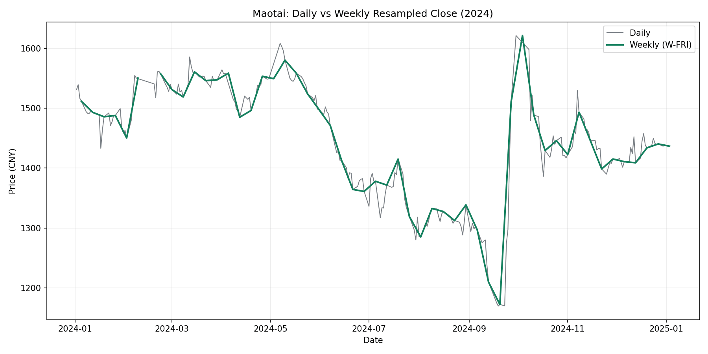
提示：反向操作（低频转高频）只能通过插值"猜"出来，不产生真实信息，回测中应避免用插值出的高频数据。
不同股票的交易日历可能不一致（停牌、上市时间不同），直接相减会错位。pandas 在算术运算时会自动按索引对齐并补 NaN，处理方法是先对齐再清洗：
输出结果如下所示：
对齐后行数: 483 Date 2024-12-26 11.1941 2024-12-27 11.2004 2024-12-30 11.2749
记住这个顺序：先对齐，再填充，再计算。直接对未对齐的数据做运算，NaN 会悄悄吞掉大量样本。
策略研究要反复使用同一批数据，每次都从数据源现下载既慢又不稳定——限流、断网、接口改版都会打断工作。
把数据落地到本地是量化工程的标配。
本篇实测对比 CSV、SQLite、Parquet 三种主流方案，给出选型建议。
三种方案代表了三种典型思路：
| 方案 | 形式 | 优势 | 局限 | 适合场景 |
|---|---|---|---|---|
| CSV | 纯文本表格 | 任何工具都能打开，零依赖 | 体积大、读写慢、无类型 | 小数据、需要人工查看 |
| SQLite | 单文件数据库 | 支持 SQL 查询、条件过滤、事务 | 不支持并发写 | 结构化行情库、按需查询 |
| Parquet | 列式二进制 | 压缩率高、列裁剪读取快 | 不可直接人工查看 | 大体量历史数据、批量研究 |
生产环境中常见的 MySQL、ClickHouse 等数据库，思路与 SQLite/Parquet 一脉相承，个人研究用后两者足够。
pandas 读写 CSV 只需要两个函数：
易错点：读取 CSV 时必须指定 index_col 与 parse_dates，否则日期会变成普通字符串列，时间序列的切片、重采样全部失效。这是 CSV 方案最常见的翻车点。
SQLite 是嵌入在单文件里的关系数据库，Python 标准库自带驱动，无需安装任何服务。
pandas 与它配合只需 to_sql 和 read_sql 两个函数：
输出结果如下所示：
查询返回行数: 241 月份 月均收盘 2024-12 1533.16 2024-11 1554.50 2024-10 1565.79
SQL 的价值在于"取所需"：只查某年、某几列、某种聚合，不必把整张表读进内存。数据量上到几十万行后，这个优势会非常明显。
Parquet 是列式压缩存储格式，按列组织数据，体积小、读取快，是数据科学领域事实上的标准格式。
口说无凭，用茅台 2019-2024 共 1453 行 × 6 列的日线数据，实测三种方案的体积与速度（本机实测，绝对值因机器而异）：
| 方案 | 写入耗时 | 读取耗时 | 文件体积 |
|---|---|---|---|
| CSV | 0.00 秒 | 0.003 秒 | 125 KB |
| SQLite | 0.00 秒 | 0.002 秒（含日期过滤） | 152 KB |
| Parquet | 1.57 秒 | 1.29 秒 | 71 KB |
结论可能和直觉相反：小数据集上三者都够快，Parquet 反而最慢——列式引擎的初始化开销在小文件上得不偿失。
Parquet 的两项真实优势在数据变大后才显现：
一是体积：本例已比 CSV 小 43%，多标的长历史的数据集上压缩比还会更高。
二是列裁剪：只读两列时 Parquet 不必扫全表，数据越大节省越多。
选型建议：个人量化研究推荐 SQLite 做主存储（可查询、可增量）+ Parquet 做批量研究的归档格式；CSV 只用于与他人交换数据。等单表数据超过千万行，再考虑 ClickHouse 等专业时序方案。
数据落地后还要保持新鲜。比起每次全量重写，增量追加更高效，核心逻辑是三步：
| 步骤 | 操作 |
|---|---|
| 查最新日期 | SELECT MAX(Date) FROM 表名 |
| 下载缺口 | 数据源 start 参数设为最新日期的次日 |
| 追加写入 | df.to_sql(..., if_exists="append") |
把这个流程封装成定时任务（如 crontab 每日收盘后执行），就得到了一个自动更新的本地行情库——这也是后面策略研究的数据基础。
技术指标是对价格与成交量序列的数学变换，把原始行情压缩成几个可比较的数字。
本篇不满足于"调库出数"：MACD、RSI、布林带、ATR 四个最常用的指标全部亲手推导，最后用 pandas-ta 验证手写结果的正确性。
上百种技术指标归纳起来就四类：
| 类别 | 回答的问题 | 代表指标 |
|---|---|---|
| 趋势类 | 价格往哪个方向走 | MA、MACD、DMI |
| 动量类 | 涨跌的力度与超买超卖 | RSI、KDJ、ROC |
| 波动率类 | 价格波动的剧烈程度 | ATR、布林带、历史波动率 |
| 成交量类 | 资金参与的热度 | OBV、成交量均线 |
本篇四个指标恰好覆盖前三类。动手之前先统一数据：使用茅台 2023-2024 的复权收盘价（复权的重要性见金融市场基础）。
MACD（Moving Average Convergence Divergence，指数平滑异同移动平均线）由三条线组成，计算只用到指数移动平均 ewm：
| 组成 | 计算 | 含义 |
|---|---|---|
| DIF（快线） | EMA(12) - EMA(26) | 短期趋势相对长期趋势的偏离 |
| DEA（慢线） | DIF 的 EMA(9) | DIF 自身的平滑 |
| MACD 柱 | 2 × (DIF - DEA) | 快慢线的背离程度（国内软件习惯乘 2） |
输出结果如下所示：
DIF DEA MACD
Date
2024-12-26 4.68 2.71 3.95
2024-12-27 4.65 3.09 3.10
2024-12-30 4.27 3.33 1.88
两年内金叉 29 次，死叉 28 次
ewm 是关键：span 参数对应均线的"周期"，adjust=False 保证与行情软件算法一致。
把价格与 MACD 画成上下两个子图：
执行以上代码，输出的图表如下：
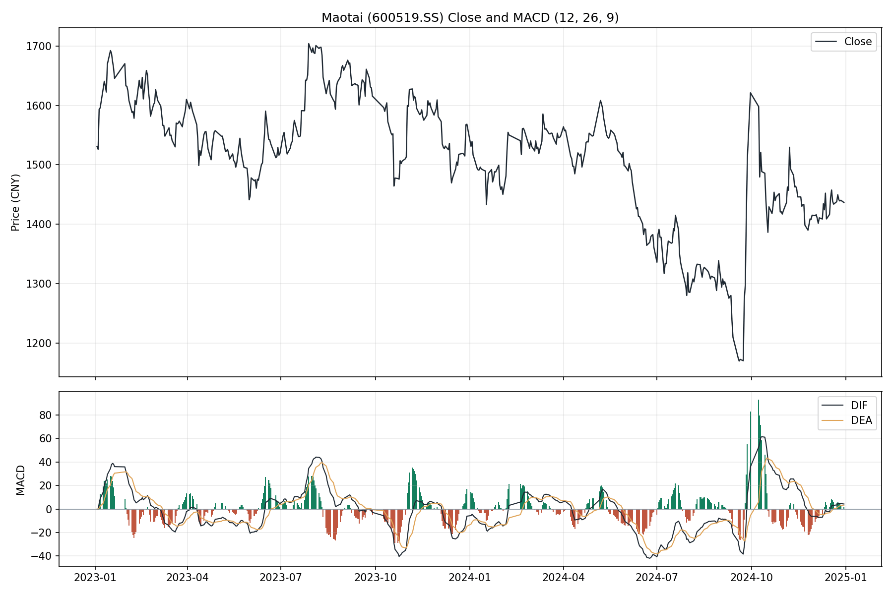
注意两年里出现了 29 次金叉——DIF/DEA 的交叉远比均线的金叉频繁，直接拿它当交易信号会产生大量噪音，实盘通常还要叠加趋势过滤。
RSI（Relative Strength Index，相对强弱指数）衡量一段时间内上涨力量的占比，取值 0 到 100：
输出结果如下所示：
最新 3 日 RSI: Date 2024-12-26 52.32 2024-12-27 52.63 2024-12-30 51.40
RSI 高于 70 惯称超买、低于 30 惯称超卖，茅台最新 RSI 在 51 附近，处于中性区域。
注意：RSI 的平滑方式有 Wilder 平滑与简单均值两种，不同软件算出的数值会有差异。本篇使用 Wilder 平滑，与主流行情软件一致。
布林带（Bollinger Bands）由中轨（20 日均线）与上下两轨（中轨 ± 2 倍标准差）构成，通道宽度随波动率自动伸缩：
输出结果如下所示：
Upper Mid Lower
Date
2024-12-26 1461.87 1427.79 1393.71
2024-12-27 1463.02 1429.05 1395.08
2024-12-30 1463.56 1430.15 1396.75
执行以上代码，输出的图表如下：
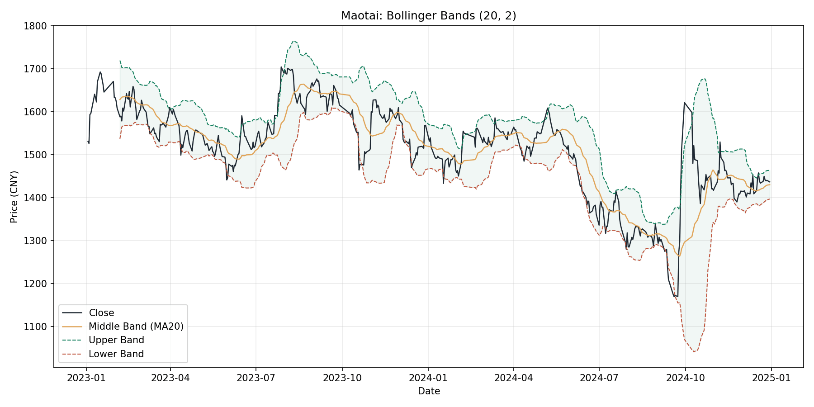
价格触及下轨说明短期偏离均值较大，这正是后面均值回归策略的入场依据之一。
ATR（Average True Range，平均真实波幅）把"今天波动有多大"变成一个以元为单位的具体数字，是设置止损距离的经典依据。
它基于真实波幅 TR——以下三者取最大：
| TR 候选 | 计算 | 覆盖情形 |
|---|---|---|
| 当日波幅 | 最高价 - 最低价 | 普通交易日 |
| 向上跳空 | |最高价 - 昨收| | 跳空高开 |
| 向下跳空 | |最低价 - 昨收| | 跳空低开 |
输出结果如下所示：
最新 3 日 TR/ATR:
TR ATR14
Date
2024-12-26 15.78 28.23
2024-12-27 16.50 27.40
2024-12-30 18.96 26.79
茅台的 ATR 约为 27 元——单日平均真实波动 27 元左右。止损设多远？很多趋势策略采用"2 倍 ATR"这类规则，让止损距离与品种的实际波动匹配。
易错点：ATR 必须用同一口径的最高/最低/收盘价计算。把复权收盘价和未复权最高价混在一起，TR 会算出天大的错值。
自己写一遍是为了理解，日常使用可以用现成库。pandas-ta 提供了上百个指标的向量化实现：
# 注意：pandas-ta 0.4.x 需要 Python 3.10 及以上 # Python 版本不足可用 uv 一键切换（见虚拟环境一篇）：uv venv --python 3.12 pip install pandas-ta
用 pandas-ta 重算同样的指标，与手写结果对比（注意 pandas-ta 要求列名为小写）：
输出结果如下所示：
MACD DIF 手写/pandas_ta: 4.2672 / 4.2672 MACD DEA 手写/pandas_ta: 3.3281 / 3.3281 RSI14 手写/pandas_ta: 51.4014 / 51.4014 布林上轨 手写/pandas_ta: 1463.5587 / 1463.5587 布林下轨 手写/pandas_ta: 1396.7471 / 1396.7471
五组数值完全一致——手写实现经得起验证。
另一个老牌选择 TA-Lib 功能更强（含形态识别），但依赖 C 库安装麻烦；pandas-ta 纯 Python 实现，个人研究更省心。
教训分享：验证时曾因"复权价喂给 ATR、未复权价喂给 MACD"导致指标对不上号。指标计算的输入口径必须统一，这个坑比算法本身常见得多。
统计是量化策略的内功：收益率的分布形态决定风险模型怎么建，平稳性决定哪些方法可用，协整决定配对交易能不能做。
本篇用真实数据回答三个问题：收益率服从正态分布吗？价格序列平稳吗？什么样的两只股票才能做配对？
很多经典模型（如马科维茨组合理论）建立在"收益率服从正态分布"的假设上，这个假设值得先检验。
用茅台 2019-2024 的日收益率计算三大特征值：
输出结果如下所示：
样本数 1452 | 均值 0.0901% | 标准差 1.8671% 偏度 0.3425 | 峰度 2.7022（正态分布两者均为 0） Jarque-Bera 统计量 465.7，p 值 7.41e-102
三个证据都指向同一个结论：
| 指标 | 实际值 | 正态分布要求 | 解读 |
|---|---|---|---|
| 偏度 | 0.3425 | 0 | 分布轻微右偏 |
| 峰度 | 2.7022 | 0 | 显著的"尖峰肥尾" |
| Jarque-Bera p 值 | 7.41e-102 | 大于 0.05 | 强烈拒绝正态假设 |
"尖峰肥尾"的直观含义：大部分日子波动不大（尖峰），但极端日子的出现频率远高于正态假设（肥尾）。
把收益率直方图与同均值同标准差的正态曲线叠加，肥尾清晰可见：
执行以上代码，输出的图表如下：
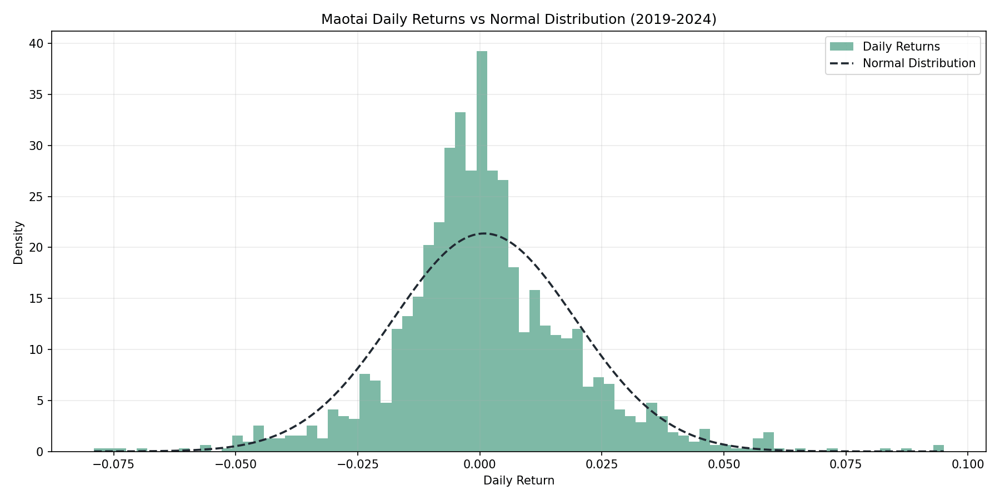
图形中间高出正态曲线一截，两侧极端值也明显更多。这就是为什么风险管理不能只看标准差，最大回撤这类"尾部指标"必须单独计算。
平稳序列的统计性质（均值、方差）不随时间变化；非平稳序列的均值在漂移，"平均值"这个概念对它意义有限。
用 ADF 检验（Augmented Dickey-Fuller）判断平稳性，零假设是"序列非平稳"：
输出结果如下所示：
价格序列: ADF 统计量 -2.6077, p 值 0.0914 -> 非平稳 收益率序列: ADF 统计量 -25.5904, p 值 0.00e+00 -> 平稳
结论是金融时间序列的经典事实：价格非平稳，收益率平稳。
这解释了为什么所有模型都建立在收益率而不是价格上：对非平稳序列做回归和均值估计会得到大量虚假结果。
直觉理解：茅台价格从 1000 元涨到 1500 元，"均值 1250 元"没有任何预测意义；但"日收益率平均 0.09%、波动 1.87%"则是相对稳定的特征。建模要建立在稳定的特征上。
第 7 篇用相关性热力图比较过白酒三兄弟，皮尔逊相关系数高就代表可以做交易了吗？不够。
相关性有两个致命局限：
一是相关性只衡量"同涨同跌的幅度"，不保证两者的差稳定——两只股票同涨同跌，但差距可以越拉越远，永远不回归。
二是相关性会漂移，牛市里高度相关的资产，危机中可能瞬间脱钩。
要判断"两者差距会不会回归"，需要比相关性更强的工具——协整。
协整（Cointegration）回答的问题是：两个各自非平稳的序列，它们的线性组合（价差）是否平稳。
如果价差平稳，就意味着价差涨高了会跌回来、跌深了会涨回去——这正是配对交易赚钱的来源：卖高买低，等价差回归。
statsmodels 的 coint 函数直接做协整检验，零假设是"不存在协整关系"。对同行业候选配对做一轮扫描：
输出结果如下所示：
五粮液 vs 泸州老窖: p = 0.2166 未通过 工商银行 vs 招商银行: p = 1.0000 未通过 美的集团 vs 格力电器: p = 0.0617 未通过 贵州茅台 vs 五粮液: p = 0.2300 未通过
用同样的方法扫描石油石化（中国石油 vs 中国石化 p=0.4855）、保险（中国平安 vs 中国人寿 p=0.1590）、电信运营商（中国移动 vs 中国电信 p=0.3953）等行业，七对候选无一通过 5% 显著性检验。
这个"全军覆没"的结果非常有教育意义：
| 常见误解 | 事实 |
|---|---|
| 同行业股票就能做配对 | 七对同行业候选无一通过检验 |
| 相关性高等于协整 | 这些股票对相关性都在 0.7 以上，依然不协整 |
| 协整关系一劳永逸 | 即使历史上通过，结构变化也可能让它失效 |
七对中美的集团与格力电器最接近（p=0.0617），作为下一篇配对交易的教学演示案例——但它未达 5% 显著水平，这一点会贯穿下一篇的结论。
协整检验之外，配对交易还需要估计对冲比率：一股美的对应多少股格力。最简单的方法是线性回归斜率：
输出结果如下所示：
对冲比率 beta = 2.8141 价差末 3 日: Date 2024-12-26 9.06 2024-12-27 9.05 2024-12-30 8.29
含义是：做多 1 股美的的同时做空 2.81 股格力，这个组合的价值就是价差。下一篇会围绕这个价差构造完整的交易规则。
"不要把鸡蛋放在同一个篮子里"人人会说，但篮子怎么选、鸡蛋怎么分，是有严谨数学的。
本篇用三只真实的 A 股（贵州茅台、工商银行、宁德时代），完整走一遍马科维茨组合理论：随机组合散点、最大夏普组合、CAPM Beta 与风险平价。
先看三只股票 2019-2024 的年化收益与波动（由日收益率计算）：
输出结果如下所示：
年化收益 年化波动
贵州茅台 0.2012 0.2964
工商银行 0.1127 0.1605
宁德时代 0.3944 0.4611
三只股票风险收益特征迥异：宁德时代收益最高波动也最大，工商银行收益最低但最稳。
分散化的魔法藏在协方差矩阵里：组合的波动不只取决于各资产的波动，更取决于它们的相关性。
输出结果如下所示：
600519.SS 601398.SS 300750.SZ
600519.SS 0.0878 0.0094 0.0498
601398.SS 0.0094 0.0258 0.0013
300750.SZ 0.0498 0.0013 0.2126
注意非对角元素（协方差）远小于对角元素（方差）——三只股票两两相关性不高。组合波动公式中这些"交叉项"会被部分抵消，这就是分散化降低风险的来源。
给定一组权重 w，组合的年化收益与波动可以直接算出。用 5000 组随机权重扫描"风险-收益"平面：
输出结果如下所示：
随机组合中最大夏普: 0.960 最大夏普组合权重: 贵州茅台 0.1539 工商银行 0.5546 宁德时代 0.2915
把 5000 个点画出来，就是教科书上的"子弹头"图形：
执行以上代码，输出的图表如下：
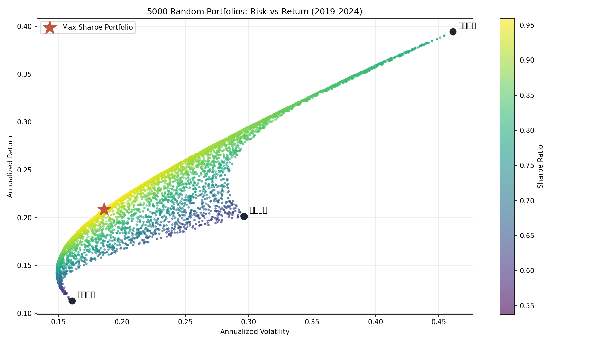
图形揭示三个重要事实：
| 观察 | 含义 |
|---|---|
| 所有散点都在单个资产左侧 | 组合可以做到比任何成分股波动更低——分散化有效 |
| 散点构成"子弹头"左边界 | 这条边界就是有效前沿，同等风险下收益最高的组合集合 |
| 最大夏普组合夏普 0.960 | 高于任一单资产（茅台 0.578、工行 0.515、宁德 0.790） |
最大夏普组合只持 15% 茅台、55% 工行——收益最高的宁德时代只占 29%。因为工行与另外两只相关性极低（协方差 0.0094 与 0.0013），它是最好的"分散器"。
提醒：随机搜索只是演示原理，工程上用 scipy.optimize 最小化负夏普求解。此外历史协方差不稳定，有效前沿会随时间移动，别把它当永久的地图。
资本资产定价模型（CAPM）把资产收益拆成两部分：跟随市场的 Beta 与超额的 Alpha。
Beta 的估计就是个股收益对市场收益的回归斜率。用跟踪沪深300 的 ETF（510300.SS）做市场代理：
输出结果如下所示：
贵州茅台: Beta = 1.008 工商银行: Beta = 0.302 宁德时代: Beta = 1.301
| Beta 区间 | 含义 |
|---|---|
| Beta = 1 | 与市场同步波动 |
| Beta > 1 | 市场涨 10% 它涨更多，进攻型 |
| Beta < 1 | 波动小于市场，防御型 |
| Beta < 0 | 与市场反向，罕见 |
工行 Beta 只有 0.302——大盘跌 10% 它平均只跌 3%，正是它成为优秀分散器的原因，与有效前沿的发现互相印证。
等权组合看似公平，实际上高波动资产贡献了大部分风险。风险平价（Risk Parity）按波动率倒数分配权重，让每类资产的风险贡献接近：
输出结果如下所示：
贵州茅台 0.2866 工商银行 0.5292 宁德时代 0.1842
宁德时代波动最大，权重被压到最低的 18%；工行最稳，占 53%。
| 方案 | 权重逻辑 | 适合谁 |
|---|---|---|
| 等权 | 各 1/3 | 最简单，但风险被高波动资产主导 |
| 市值加权 | 按市值分配 | 指数基金的做法 |
| 反波动率 | 波动倒数 | 追求均衡风险贡献 |
| 最大夏普 | 优化求解 | 收益导向，但对参数敏感 |
注意：以上全部基于 2019-2024 历史数据。收益与相关性都会漂移，历史最优组合不等于未来最优组合——这个主题在参数优化一篇会系统性展开。
第 4 篇的双均线是趋势跟踪的最简形态。本篇升级到这一流派的巅峰之作——海龟交易法则的核心：唐奇安通道突破。
完成一个"20 日突破入场、10 日反向突破离场"的完整策略，并在茅台 2019-2024 数据上诚实评估它的表现。
1983 年，交易大师理查德·丹尼斯与人打赌"交易能力可以后天培养"，招募了一批学员称为"海龟"，教授一套机械化规则。这套规则后来公开，成为量化入门的必修课。
其核心思想与双均线一致——追涨趋势，但入场离场更明确：
| 环节 | 规则 | 逻辑 |
|---|---|---|
| 入场 | 收盘价突破过去 20 日最高价 | 创阶段新高，趋势可能启动 |
| 离场 | 收盘价跌破过去 10 日最低价 | 趋势衰竭信号 |
| 仓位 | 按 ATR 波动率调整（原文用 2% 风险法则） | 波动大的品种少买 |
说明：完整海龟法则还包含加仓、止损与多品种分散，篇幅所限本篇实现其核心框架；仓位管理（ATR 风险法则）在风险管理一篇展开。
唐奇安通道就是"过去 N 日的最高价/最低价"画出的两条线。实现时有一个关键细节：必须 shift(1) 前推一天。
理由与回测公平性有关：今天的收盘价要和"截至昨天"的 20 日最高比较，如果把今天也算进通道，价格永远突破自己，策略就废了。
逐日遍历，空仓时看是否突破上轨，持仓时看是否跌破下轨：
代码结构你在回测与绩效评估已经见过：持仓序列 shift(1) 后乘以日收益，这次只是把信号来源换成了通道突破。
输出结果如下所示：
交易次数 33 | 策略累计 69.16% | 买入持有 187.58% 年化 9.55% | 波动 18.92% | 最大回撤 -28.53% | 夏普 0.35
买入持有同期对比（同一段数据计算）：累计 187.58%、年化 20.12%、最大回撤 -47.48%、夏普 0.58。
结果值得认真解读，而不是只看收益率：
| 指标 | 海龟策略 | 买入持有 | 解读 |
|---|---|---|---|
| 累计收益 | 69.16% | 187.58% | 大幅跑输——趋势策略吃不到单边牛市全程 |
| 最大回撤 | -28.53% | -47.48% | 回撤大幅收敛——通道离场在 2021 年后的下跌中起了保护作用 |
| 夏普比率 | 0.35 | 0.58 | 风险调整后仍有差距，策略并非免费午餐 |
把 2023-2024 段的通道与买卖点画出来，策略行为一目了然：
执行以上代码，输出的图表如下：
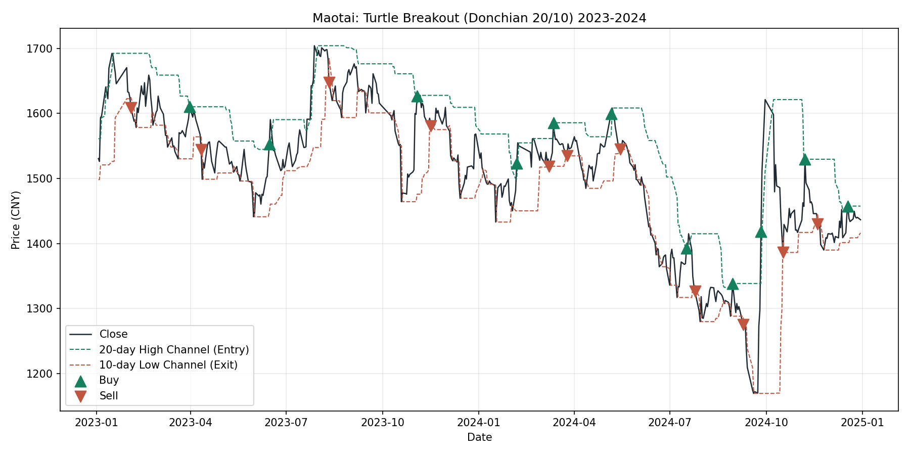
可以看到通道像两条随行的"护栏"：价格突破上护栏时买入，跌穿下护栏时离场，全部交易在图上一目了然。
结合第 9 篇双均线回测（同样跑输买入持有）与本篇结果，可以给趋势策略画出完整画像：
| 市场环境 | 趋势策略表现 | 原因 |
|---|---|---|
| 单边上涨 | 赚钱但跑输买入持有 | 突破才入场，永远慢半拍；离场规则又让它提前下车 |
| 单边下跌 | 大赚，或至少避开 | 空仓状态天然免疫，或做空获利 |
| 区间震荡 | 反复止损亏损 | 假突破不断触发假信号 |
这不是缺陷而是性格：趋势策略用"牛市少赚"换"熊市保命"。机构把趋势策略与均值回归策略搭配使用，正是为了互补——均值回归是下一篇的主角。
均值回归是趋势跟踪的镜像：不追涨杀跌，而是赌价格"偏离过远后会回来"。
本篇实现两类经典均值回归：布林带回归交易与配对交易，并延续本教程的诚实传统——配对交易的演示结果同样如实呈现，包括亏损。
趋势策略怕震荡，均值回归恰恰最爱震荡：价格在区间内反复摆动时，"跌多了买、涨多了卖"胜率最高。
| 流派 | 核心假设 | 克星 |
|---|---|---|
| 趋势跟踪 | 价格趋势会延续 | 震荡市（假突破） |
| 均值回归 | 价格偏离会回归 | 单边市（越抄越低） |
所以两类策略天然互补，很多基金同时运作两者对冲环境风险。
第 14 篇已经画过布林带，现在把它变成策略：价格跌破下轨（超卖）买入，回到中轨（均值）卖出。
加上熟悉的绩效计算：
输出结果如下所示：
开仓次数 10 布林带策略: 累计 19.49% | 年化 9.73% | 波动 13.27% | 最大回撤 -8.65% | 夏普 0.51 买入持有: 累计 -6.14% | 年化 -3.25% | 波动 24.41% | 最大回撤 -31.37% | 夏普 -0.26
戏剧性的结果：同一只股票、同一个区间，趋势型的买入持有亏 6%，均值回归赚 19.5%，回撤只有前者的四分之一。
这就是"策略性格"的直观体现——震荡市是均值回归的主场。把信号画出来看看它在做什么：
执行以上代码，输出的图表如下：
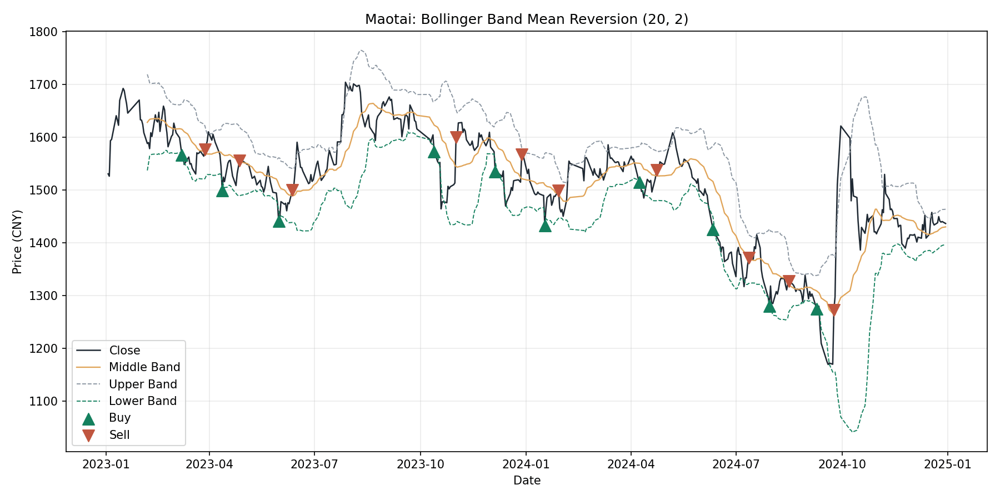
注意 2024 年 9 月末的暴涨段：策略早早离场，完美避开了随后的大幅回落——但它也因此错过了 2022 年那种单边行情。方法没有优劣，只有适配。
警告：均值回归最怕单边下跌中的"接飞刀"。本例茅台 2023-2024 恰好震荡，若换成 2018 年式的持续阴跌，跌破下轨后继续跌的策略会持续失血。实盘必须搭配止损。
布林带策略始终暴露在市场方向风险下。配对交易用"一多一空"对冲掉市场涨跌，只赚两只股票价差回归的钱。
完整流程在统计基础已经铺好：协整检验、对冲比率（beta=2.8141，用 2022 年数据估计）、价差与 z-score。现在把 z-score 变成交易规则：
规则只有两条：z 低于 -2 开仓赌回归，z 回到 ±0.5 以内平仓。执行后的开平仓时点（z 值）如下：
开仓 5 次 | 期末持仓 0 Date 2023-02-02 -2.02 <- 开仓 2023-07-03 0.42 <- 平仓 2023-07-28 -2.08 <- 开仓 2023-08-21 0.22 <- 平仓 2024-02-20 -2.09 <- 开仓 2024-03-26 -0.49 <- 平仓 2024-05-06 -2.15 <- 开仓 2024-05-16 -0.22 <- 平仓 2024-08-05 -2.12 <- 开仓 2024-10-31 -0.02 <- 平仓
五次开仓全部来自价差跌破 -2σ，也全部成功等到回归——信号机制完全按设计工作。
执行以上代码，输出的图表如下：
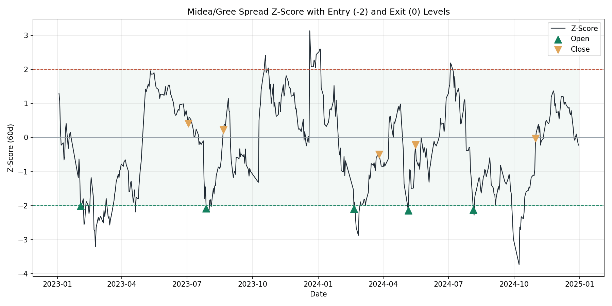
用价差的相对变化核算策略收益（未计融券成本）：
配对价差多头: 累计 -8.65% | 年化 -4.61% | 波动 31.59% | 最大回撤 -46.41%
五次回归全部抓到，最终却亏了 8.65%——因为价差本身的漂移（美的相对格力中枢上移）吃掉了全部回归利润。
回到协整检验：这对股票 p=0.0617，并未通过 5% 显著性检验。统计上"不协整"的含义正是"价差会漂移"，这个亏损是检验结果的老实兑现，不是运气差。
结论：配对交易的每一步都不能省——协整检验是入场券，对冲比率要防未来函数，融券成本要计入，组合还要分散在多个配对上。任何一步偷懒，结果都可能像这个演示一样"信号全对，结局全错"。
前面所有策略都在时序维度打转：盯着一只股票的历史行情找信号。多因子策略切换到"截面"维度：同一时刻给全市场股票打分，买得分高的、卖得分低的。
这是量化机构的主流框架，本篇用 20 只 A 股的小股票池，完整走一遍因子构建 - IC 检验 - 分层回测的标准流程。结果同样照实呈现——包括一个失效的动量因子。
因子是我们相信能预测未来收益的股票特征。业内常用的因子大类：
| 因子大类 | 代表因子 | 逻辑 |
|---|---|---|
| 动量 | 过去 6-12 个月涨幅 | 强者恒强（海外成熟市场） |
| 价值 | 市盈率、市净率倒数 | 便宜的股票被低估 |
| 质量 | ROE、毛利率、负债率 | 好公司值得溢价 |
| 规模 | 总市值（小市值因子） | 小公司弹性大 |
本篇以最直观的动量因子为教学案例：用过去 120 日（约 6 个月）的涨幅给股票打分。
因子好不好，不能靠信仰，要算 IC（Information Coefficient）：每月末，计算"因子值"与"下月收益"的截面相关系数。
IC 为正且稳定，说明因子值高的股票下月确实涨得多；IC 接近 0，因子就是玄学。
输出结果如下所示：
月度 IC 样本数 28 | IC 均值 -0.0639 | IC 标准差 0.3561 ICIR = -0.1795 | IC>0 占比 46.43%
结果出人意料又在情理之中：IC 为负。在这 20 只 A 股、2022-2024 的样本里，过去涨得多的股票下月反而更容易跌。
| 指标 | 本例 | 通常认为 |
|---|---|---|
| IC 绝对值 | 0.064 | 大于 0.03 即有信息量 |
| IC 方向 | 负（反转效应） | 动量因子在美股通常为正 |
| ICIR | -0.18 | 绝对值大于 0.3 较稳定 |
这正是 A 股的著名特征：短期动量弱、反转效应强，大量学术与实务研究得到过同样的结论。"动量因子在美股有效"的知识照搬到 A 股，就会被数据打脸。
IC 为负不等于白干——负 IC 因子反向使用就是正 IC。用分层回测验证这个发现。
分层回测是因子检验的"实弹演习"：每月末按因子值把股票分成 5 组，等权持有一个月，看各组收益是否有序排列。
输出结果如下所示：
各组月均收益: 第 1 组（动量最低）: 1.5296%/月 第 2 组: 1.4587%/月 第 3 组: 1.5851%/月 第 4 组: 0.8594%/月 第 5 组（动量最高）: 0.3194%/月 第1组年化 19.98% | 第5组年化 3.90% | 多空年化差 -16.08%
把五组的累计净值画出来：
执行以上代码，输出的图表如下：
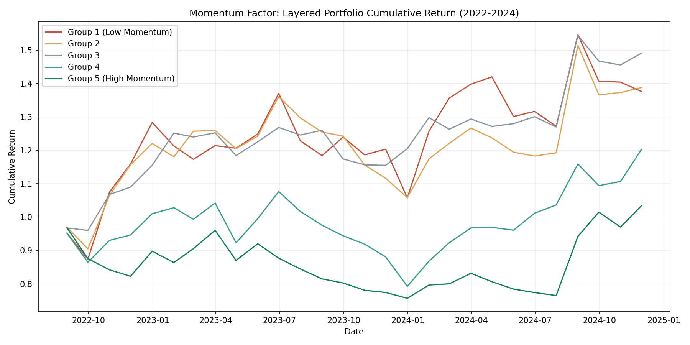
五组曲线总体呈现"动量越低表现越好"的分层——与负 IC 完全一致，两条独立证据链互相印证。
找到一个失效的因子，比看到一个赚钱的回测更有价值：
| 步骤 | 本篇实践 | 意义 |
|---|---|---|
| 构建因子 | 120 日动量 | 把想法变成可计算的数字 |
| IC 检验 | 均值 -0.064，ICIR -0.18 | 用数据而非信仰判断有效性 |
| 分层回测 | 五组单调性清晰 | 验证因子与收益的截面关系 |
| 结论 | A 股 2022-2024 动量反转 | 因子有市场与时期依赖，必须本地化检验 |
提醒：本篇样本只有 20 只股票、3 年数据，结论不能直接外推到全市场。工程实践中会扩展到全 A 股、加入行业市值中性化、使用 alphalens 等专业工具，但流程与本篇完全一致。
前面的章节有说回测三大陷阱，其中过拟合最隐蔽：它不报错、不警告，还附赠一份漂亮的回测报告。
本篇在真实数据上亲手制造一次过拟合，再用样本内外分离和 Walk-Forward 两道防线拆穿它。
所有数字来自双均线策略在茅台 2019-2024 的实算结果。
双均线有快慢两个参数。对每个组合回测一遍，得到"参数-收益"的完整地图：
输出结果如下所示（单位：%）：
5 10 15 20 25 30
40 11.1 4.2 4.8 8.7 10.7 7.7
60 9.8 9.1 10.2 10.9 12.6 14.4
80 6.5 8.4 11.9 11.4 10.8 12.5
100 6.2 7.4 9.3 8.8 8.7 7.4
120 1.9 2.6 3.6 3.7 1.2 2.4
最优参数: fast=30, slow=60, 年化 14.44%
把网格画成热力图，参数地形的"平原"与"洼地"一目了然：
执行以上代码，输出的图表如下：
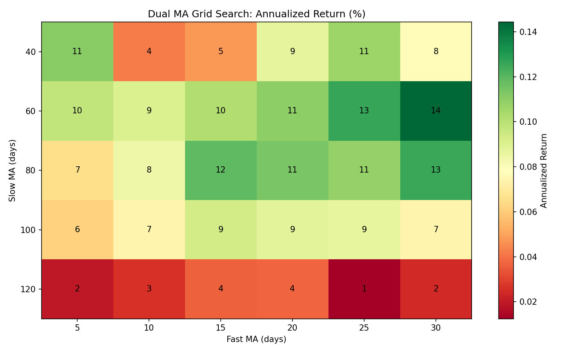
选参数看地形，不只是看最高点：
| 地形特征 | 解读 | 应对 |
|---|---|---|
| 孤立尖峰 | 参数的过拟合典型症状，换个参数就崩 | 直接放弃 |
| 平缓高原 | 策略逻辑稳健，参数不敏感 | 优先选择，取区域中心值 |
本例中快线 15-30、慢线 60-80 的区域连片给出 10%-14% 的年化收益，属于健康的高原地形；而慢线 120 一行整体塌陷，说明信号太迟钝。最优的 30/60 恰好位于高原边缘——稳妥的选择是高原中心（如 20/60 或 25/60），而不是边界上的最大值。
网格用 2019-2024 全区间数据选出"最优参数"，问题在于：这些参数见过全部考题。
正确的做法是把数据切成两段：样本内（IS，2019-2023）调参数，样本外（OOS，2024）考试：
输出结果如下所示：
样本内最优: 30/60, IS 年化 19.62% 该参数 2024 样本外: 年化 -0.40% 2024 买入持有: -6.18%
样本内年化 19.62%，样本外直接跌到 -0.40%——缩水 20 个百分点。
这就是过拟合的真实嘴脸：参数完美适配了 2019-2023 的行情结构，而 2024 的市场变了。公允地说，样本外跑赢了买入持有 6 个百分点，策略并非一无是处，但对"19.6% 年化"抱有期待就会失望。
纪律：样本外数据只能用一次。反复"偷偷"看样本外结果再回去调参，样本外就变成了更大的样本内，防线形同虚设。
样本内外只切了一次刀，结论容易受切法影响。Walk-Forward（滚动前推验证）每年重演一次"用历史选参数、在未来执行"的完整流程：
实现只需要在年份上套一层循环：
输出结果如下所示：
2020 年: 选中 (25, 60) | 训练期表现 41.58% | 样本外 68.12% 2021 年: 选中 (30, 60) | 训练期表现 58.09% | 样本外 3.01% 2022 年: 选中 (30, 60) | 训练期表现 37.00% | 样本外 -5.58% 2023 年: 选中 (30, 60) | 训练期表现 24.84% | 样本外 0.81% 2024 年: 选中 (30, 60) | 训练期表现 19.62% | 样本外 -8.40%
这张表是全篇最重要的一张表：
| 观察 | 含义 |
|---|---|
| 五年中四年选中同一组参数（30, 60） | 参数有一定稳定性，不是纯噪音 |
| 训练期表现从 41.58% 一路降到 19.62% | 参数的"历史战绩"会自然衰减，不要线性外推 |
| 样本外时好时坏（68% 到 -8%） | 参数解决不了市场环境切换，2022 年后的茅台已不是 2019 年的茅台 |
Walk-Forward 的价值不在于选出更好的参数，而在于给出对参数衰减的无偏预期：连年重优化后的平均样本外表现，才是这个策略在这个市场上可信的水平。
最后一种防线回答一个哲学问题：好成绩会不会只是运气？做法简单粗暴——把策略信号随机打乱几百次，看"瞎蒙策略"的收益分布。
如果真策略的收益只排在随机分布的前 30%，它与掷硬币没有区别；排进前 5%，才有信心说信号里有真实信息。
| 检验 | 做法 | 回答的问题 |
|---|---|---|
| 网格地形 | 看参数-收益曲面是否平缓 | 参数稳健吗 |
| 样本内外 | 留一段数据只考一次 | 成绩能外推吗 |
| Walk-Forward | 逐年滚动重演全流程 | 长期可信水平是多少 |
| 蒙特卡洛置换 | 打乱信号对比随机分布 | 是不是纯运气 |